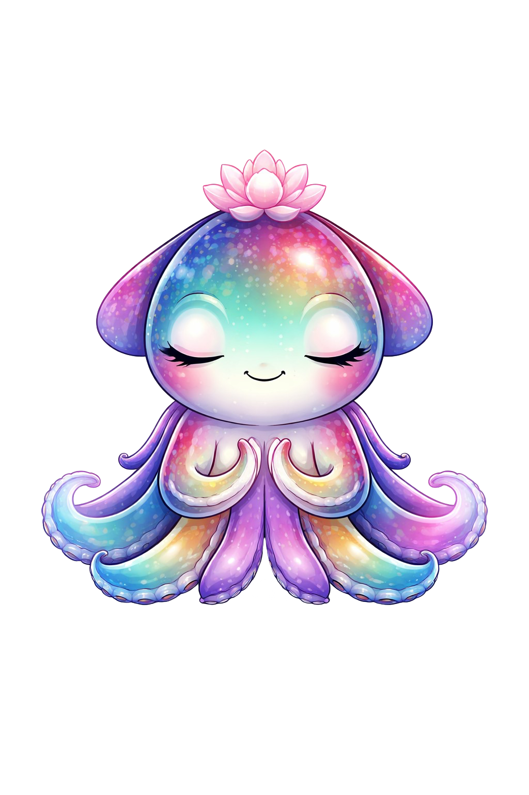

<!DOCTYPE html>
<html lang="en">
<head>
<meta charset="UTF-8">
<meta name="viewport" content="width=device-width, initial-scale=1.0">
<title>Crucibulum</title>
<link rel="preconnect" href="https://fonts.googleapis.com">
<link rel="preconnect" href="https://fonts.gstatic.com" crossorigin>
<link href="https://fonts.googleapis.com/css2?family=DM+Mono:wght@400;500&family=Space+Grotesk:wght@400;500;700&display=swap" rel="stylesheet">
<style>
/*
 * CRUCIBULUM — Deep-sea AI instrument panel
 *
 * Design directive:
 *   - Deep abyss background, not flat dark gray.
 *   - Orange (#fb923c) as PRIMARY text/label color. Not an accent.
 *   - Cyan/teal (#4df5c8) as signal color — bars, meters, graphs.
 *   - Panels as carved instrument windows, not floating cards.
 *   - Every section communicates visually first, text second.
 *   - NO paragraphs. Everything is chips, bars, strips, scores, tags.
 *   - Asymmetric rhythm. Hero dominates, side panels are dense meters.
 *
 * Class-name contract is preserved so the existing render() in
 * index.html's <script> block still lights up without JS changes,
 * BUT several new primitives are introduced:
 *   .abyss-banner / .ab-*      — full-width instrument callsign
 *   .status-strip / .ss-*      — single-line system status readout
 *   .vitals / .vital / .v-*    — horizontal telemetry meters
 *   .chip                      — compact data chip (primary visual atom)
 *   .tag                       — inline short tag (correct/safe/stable)
 *   .sig-card / .sc-*          — signal card for category breakdowns
 *   .run-strips / .run-strip   — compact horizontal run rows
 *   .fact-strip / .fs-*        — provenance/methodology fact line
 *   .leader-strip              — leaderboard row (dense, single-line)
 *   .glyph-grid / .glyph       — dense meter wall on the inspection panel
 *   .sweep                     — animated scan sweep overlay on panels
 *
 * Legacy class names (.metric-card, .history-item, .score-hero, etc.)
 * are kept mostly as aliases so partial templates still render.
 */

*{box-sizing:border-box}
:root{
  color-scheme:dark;

  /* ─── Abyss palette ────────────────────────────────────────────── */
  --abyss-0:#00030a;
  --abyss-1:#02061a;
  --abyss-2:#040d26;
  --abyss-3:#07173a;
  --abyss-line:rgba(120,210,255,.14);
  --abyss-line-bright:rgba(140,220,255,.34);
  --abyss-edge:rgba(160,220,255,.22);
  --abyss-grid:rgba(140,220,255,.045);

  /* ─── Signals (bioluminescent spectrum) ───────────────────────── */
  --orange:#fb923c;
  --orange-hot:#ffb366;
  --orange-dim:rgba(251,146,60,.58);
  --coral:#ff8a65;
  --teal:#4df5c8;
  --teal-hot:#7bffdd;
  --teal-dim:rgba(77,245,200,.58);
  --aqua:#5eead4;
  --cyan:#6fd9ff;
  --cyan-hot:#a0e9ff;
  --violet:#b196ff;
  --violet-hot:#c9b4ff;
  --magenta:#ff6ec7;
  --red:#ff5577;
  --amber:#ffcf6b;

  /* Living gradient used for connector lines and currents. */
  --current:linear-gradient(90deg,#6fd9ff 0%,#5eead4 28%,#b196ff 62%,#fb923c 100%);
  --current-soft:linear-gradient(90deg,rgba(111,217,255,.7) 0%,rgba(94,234,212,.6) 28%,rgba(177,150,255,.55) 62%,rgba(251,146,60,.5) 100%);

  /* ─── Text ─────────────────────────────────────────────────────── */
  --ink:var(--orange);              /* PRIMARY text is orange */
  --ink-soft:rgba(251,146,60,.72);
  --ink-dim:rgba(251,146,60,.44);
  --ink-cold:#cbd7ea;                /* rare neutral for value cells */
  --ink-ghost:rgba(203,215,234,.32);

  --body:'Space Grotesk',sans-serif;
  --mono:'DM Mono',monospace;

  --shadow-deep:0 40px 120px rgba(0,0,0,.85),0 0 80px rgba(20,60,120,.25);
  --shadow-panel:0 24px 80px rgba(0,0,0,.72),0 0 0 1px rgba(20,40,80,.6);
  --bubble-glow:
    inset 0 1px 0 rgba(160,230,255,.22),
    inset 0 0 34px rgba(20,50,90,.55),
    0 18px 60px rgba(0,0,0,.62),
    0 0 0 1px rgba(120,200,255,.08);
}

/* ─── Abyss background ─────────────────────────────────────────────
 * Layered so it feels like being underwater with bioluminescent
 * sources rather than a flat page. A deep midnight-teal base, a
 * drifting caustic, a handful of bioluminescent sources bleeding in
 * from the edges, and a soft vignette. No harsh grid. */
html,body{
  margin:0;
  min-height:100%;
  background:
    radial-gradient(ellipse 70% 55% at 50% 42%,transparent 24%,rgba(0,0,4,.82) 100%),
    radial-gradient(circle at 8% 12%,rgba(111,217,255,.16),transparent 34%),
    radial-gradient(circle at 92% 8%,rgba(77,245,200,.14),transparent 36%),
    radial-gradient(circle at 6% 94%,rgba(177,150,255,.14),transparent 38%),
    radial-gradient(circle at 94% 96%,rgba(251,146,60,.12),transparent 38%),
    radial-gradient(circle at 50% 60%,rgba(30,80,140,.18),transparent 60%),
    linear-gradient(180deg,#020617 0%,#01030d 46%,#020818 100%);
  color:var(--ink);
  font-family:var(--body);
  -webkit-font-smoothing:antialiased;
  text-rendering:optimizeLegibility;
}

/* Bioluminescent particulate field — faint jellyfish-stars drifting
 * in the abyss. Built from layered radial gradients so it never
 * hurts readability but gives the page its "living water" depth. */
body::before{
  content:"";
  position:fixed;
  inset:-10%;
  pointer-events:none;
  background-image:
    radial-gradient(1.5px 1.5px at 12% 18%,rgba(180,240,255,.85),transparent 60%),
    radial-gradient(1px 1px at 22% 42%,rgba(150,230,255,.7),transparent 60%),
    radial-gradient(2px 2px at 34% 8%,rgba(200,240,255,.9),transparent 60%),
    radial-gradient(1px 1px at 48% 22%,rgba(180,220,255,.6),transparent 60%),
    radial-gradient(1.5px 1.5px at 62% 36%,rgba(220,200,255,.8),transparent 60%),
    radial-gradient(1px 1px at 72% 14%,rgba(170,230,255,.55),transparent 60%),
    radial-gradient(2px 2px at 84% 28%,rgba(250,220,180,.75),transparent 60%),
    radial-gradient(1px 1px at 94% 46%,rgba(180,210,255,.5),transparent 60%),
    radial-gradient(1.5px 1.5px at 8% 62%,rgba(180,230,240,.75),transparent 60%),
    radial-gradient(1px 1px at 26% 78%,rgba(200,180,255,.6),transparent 60%),
    radial-gradient(2px 2px at 42% 92%,rgba(170,240,230,.85),transparent 60%),
    radial-gradient(1px 1px at 56% 66%,rgba(210,190,255,.5),transparent 60%),
    radial-gradient(1.5px 1.5px at 68% 82%,rgba(250,210,170,.7),transparent 60%),
    radial-gradient(1px 1px at 78% 58%,rgba(180,230,240,.55),transparent 60%),
    radial-gradient(2px 2px at 88% 72%,rgba(180,220,255,.8),transparent 60%),
    radial-gradient(1px 1px at 96% 88%,rgba(220,190,255,.55),transparent 60%);
  background-size:100% 100%;
  opacity:.72;
  mask-image:radial-gradient(ellipse 90% 90% at 50% 50%,black 35%,transparent 100%);
  animation:drift 48s ease-in-out infinite alternate;
  z-index:0;
}
/* Soft caustic ripple overlay — barely there, living water feel. */
body::after{
  content:"";
  position:fixed;
  inset:0;
  pointer-events:none;
  background:
    radial-gradient(ellipse 140% 60% at 50% -10%,rgba(111,217,255,.06),transparent 60%),
    radial-gradient(ellipse 140% 60% at 50% 110%,rgba(177,150,255,.05),transparent 60%);
  mix-blend-mode:screen;
  opacity:.85;
  z-index:0;
}

#app{min-height:100vh;padding:22px;position:relative;z-index:1}
.app-shell{
  max-width:1580px;
  margin:0 auto;
  display:grid;
  gap:18px;
  position:relative;
}
/* Network halo — a drifting radial wash behind the whole shell that
 * makes every panel feel like a node on the same bioluminescent
 * lattice. Anchored to the shell (not the viewport) so it scrolls
 * with the content. */
.app-shell::before{
  content:"";
  position:absolute;
  inset:-40px -60px;
  pointer-events:none;
  z-index:-1;
  background:
    radial-gradient(circle at 50% 12%,rgba(111,217,255,.12),transparent 38%),
    radial-gradient(circle at 14% 32%,rgba(94,234,212,.08),transparent 32%),
    radial-gradient(circle at 86% 32%,rgba(177,150,255,.09),transparent 32%),
    radial-gradient(circle at 20% 70%,rgba(177,150,255,.07),transparent 36%),
    radial-gradient(circle at 82% 70%,rgba(251,146,60,.07),transparent 36%),
    radial-gradient(circle at 50% 96%,rgba(94,234,212,.08),transparent 40%);
  filter:blur(2px);
  animation:halo 32s ease-in-out infinite alternate;
}
/* Signal tether — a hair-thin gradient current that runs vertically
 * in the gap between every pair of sibling panels inside the shell.
 * Reinforces the "one network" feel without clutter. Uses ::after
 * to avoid clobbering existing ::before rules on status-strip,
 * nav-band, and stage grids; skipped on run-progress (its own fx)
 * and abyss-banner (its ::after is the conic halo). */
.app-shell > * + *:not(.run-progress):not(.abyss-banner){position:relative}
.app-shell > * + *:not(.run-progress):not(.abyss-banner)::after{
  content:"";
  position:absolute;
  top:-16px;
  left:50%;
  transform:translateX(-50%);
  width:2px;
  height:14px;
  background:linear-gradient(180deg,transparent,rgba(111,217,255,.55),rgba(94,234,212,.4),transparent);
  filter:blur(.4px) drop-shadow(0 0 4px rgba(111,217,255,.6));
  pointer-events:none;
  opacity:.72;
}

/* ─── Bubble windows ──────────────────────────────────────────────
 * Panels are membranes, not cards. Rounded, translucent, with a
 * soft inner bioluminescent glow. Each panel has a living current
 * running across its top edge and a returning current along its
 * bottom edge — so every panel feels like a node on one network. */
.panel,.subpanel,.metric-card,.result-card{
  position:relative;
  border-radius:22px;
  background:
    radial-gradient(ellipse 80% 120% at 50% -10%,rgba(111,217,255,.08),transparent 60%),
    radial-gradient(ellipse 80% 120% at 50% 110%,rgba(177,150,255,.06),transparent 60%),
    linear-gradient(180deg,rgba(4,10,24,.82) 0%,rgba(2,6,16,.92) 100%);
  border:1px solid rgba(120,200,255,.18);
  box-shadow:var(--bubble-glow);
  overflow:hidden;
  backdrop-filter:blur(2px);
  -webkit-backdrop-filter:blur(2px);
}
.panel::before{
  content:"";
  position:absolute;
  top:0;left:8%;right:8%;
  height:1px;
  background:var(--current-soft);
  background-size:200% 100%;
  opacity:.85;
  pointer-events:none;
  filter:blur(.3px);
  animation:flow 14s linear infinite;
}
.panel::after{
  content:"";
  position:absolute;
  inset:auto 12% 0 12%;
  height:1px;
  background:linear-gradient(90deg,transparent 0%,rgba(94,234,212,.55) 30%,rgba(177,150,255,.45) 70%,transparent 100%);
  background-size:200% 100%;
  opacity:.55;
  pointer-events:none;
  animation:flow 18s linear infinite reverse;
}
.subpanel{border-radius:18px}
.metric-card,.result-card{border-radius:18px}

/* Corner brackets via a tiny utility pseudo-stack (applied inline
   where layout permits). Using a dedicated wrapper class keeps
   corner markers off elements that would clash with them. */
.corners::before,.corners::after{
  content:"";
  position:absolute;
  width:12px;height:12px;
  pointer-events:none;
  opacity:.72;
}
.corners::before{top:10px;left:10px;border-top:1px solid rgba(111,217,255,.65);border-left:1px solid rgba(111,217,255,.65);border-top-left-radius:6px}
.corners::after{bottom:10px;right:10px;border-bottom:1px solid rgba(177,150,255,.6);border-right:1px solid rgba(177,150,255,.6);border-bottom-right-radius:6px}

/* ─── Typography primitives ─────────────────────────────────────── */
.eyebrow,.mini-label,.small-note,.label,.field label{
  font-family:var(--mono);
  text-transform:uppercase;
  letter-spacing:.22em;
  font-size:10px;
  font-weight:500;
  color:var(--ink-soft);
}
.headline,.panel-title,.section-head h3{
  margin:0;
  font-family:var(--body);
  font-weight:700;
  text-transform:uppercase;
  letter-spacing:.08em;
  color:var(--orange);
  text-shadow:0 0 22px rgba(251,146,60,.28);
}
.section-head h3,.panel-title{
  font-size:15px;
  letter-spacing:.14em;
}
.section-head{
  position:relative;
  display:flex;
  align-items:center;
  justify-content:space-between;
  gap:12px;
  padding-bottom:10px;
  margin-bottom:12px;
}
.section-head::after{
  content:"";
  position:absolute;
  left:0;right:0;bottom:0;
  height:1px;
  background:var(--current-soft);
  background-size:200% 100%;
  opacity:.55;
  animation:flow 22s linear infinite;
  pointer-events:none;
}
.section-head > div:first-child{min-width:0}

/* Kill walls of text globally: every prose-ish class becomes a
   one-line ellipsis surface. Where prose was legitimately needed,
   it's been replaced in the render functions with chips/tags. */
.desc,.hero-copy,.panel-copy,.note,.muted,.summary-copy,
.history-sub,.surface-copy,.hint,.metric-card .hint,.plain-subtitle{
  display:none;
}

/* ─── Abyss banner (hero) ──────────────────────────────────────── */
.abyss-banner{
  position:relative;
  padding:26px 28px 24px;
  border-radius:28px;
  border:1px solid rgba(140,220,255,.22);
  background:
    radial-gradient(ellipse 60% 80% at 50% 50%,rgba(30,90,160,.22),transparent 62%),
    radial-gradient(circle at 12% 50%,rgba(111,217,255,.16),transparent 42%),
    radial-gradient(circle at 88% 50%,rgba(177,150,255,.14),transparent 42%),
    radial-gradient(circle at 50% 108%,rgba(251,146,60,.12),transparent 55%),
    linear-gradient(180deg,rgba(4,12,28,.88) 0%,rgba(2,6,18,.94) 100%);
  box-shadow:
    inset 0 1px 0 rgba(160,230,255,.28),
    inset 0 -1px 0 rgba(177,150,255,.22),
    inset 0 0 60px rgba(20,50,100,.55),
    0 30px 90px rgba(0,0,0,.72),
    0 0 0 1px rgba(120,200,255,.08);
  display:grid;
  grid-template-columns:auto 1fr auto;
  gap:32px;
  align-items:center;
  min-height:170px;
  overflow:hidden;
  backdrop-filter:blur(2px);
  -webkit-backdrop-filter:blur(2px);
}
.abyss-banner::before{
  content:"";
  position:absolute;
  top:0;left:6%;right:6%;height:2px;
  background:var(--current);
  background-size:200% 100%;
  opacity:.85;
  filter:blur(.4px);
  animation:flow 10s linear infinite;
  pointer-events:none;
}
.abyss-banner::after{
  content:"";
  position:absolute;
  inset:-40% -10% auto -10%;
  height:160%;
  background:
    radial-gradient(ellipse 40% 60% at 50% 50%,rgba(111,217,255,.14),transparent 55%),
    conic-gradient(from 90deg at 50% 50%,transparent 0deg,rgba(94,234,212,.08) 40deg,transparent 80deg,rgba(177,150,255,.08) 160deg,transparent 200deg,rgba(251,146,60,.08) 280deg,transparent 320deg);
  pointer-events:none;
  opacity:.7;
  mix-blend-mode:screen;
}

/* ─── Squidley — the keystone ───────────────────────────────────
 * She sits behind the lab score as a soft, radiant watermark.
 * Her bioluminescence is the source of the whole page's light: a
 * pulsing radial halo bleeds out from behind her into the banner
 * and (subliminally) into the rest of the lattice. */
.ab-squid{
  position:absolute;
  inset:0;
  display:flex;
  align-items:center;
  justify-content:center;
  pointer-events:none;
  z-index:0;
}
.ab-squid img{
  width:clamp(220px,28vw,360px);
  height:auto;
  opacity:.42;
  filter:
    drop-shadow(0 0 24px rgba(111,217,255,.55))
    drop-shadow(0 0 48px rgba(177,150,255,.35))
    drop-shadow(0 0 80px rgba(94,234,212,.28))
    saturate(1.15)
    brightness(1.05);
  mix-blend-mode:screen;
  animation:squidBreath 6s ease-in-out infinite;
  user-select:none;
  -webkit-user-drag:none;
}
.ab-squid-halo{
  position:absolute;
  inset:0;
  background:
    radial-gradient(circle at 50% 50%,rgba(111,217,255,.22) 0%,rgba(94,234,212,.14) 14%,rgba(177,150,255,.1) 28%,rgba(251,146,60,.06) 44%,transparent 60%);
  mix-blend-mode:screen;
  animation:squidPulse 6s ease-in-out infinite;
}
/* Push the ab-callsign / ab-core / ab-telemetry above Squidley so
 * the giant score is readable even while her light radiates. */
.ab-callsign,.ab-core,.ab-telemetry{position:relative;z-index:2}
@keyframes squidBreath{
  0%,100%{transform:translateY(0) scale(1);opacity:.42}
  50%{transform:translateY(-4px) scale(1.02);opacity:.52}
}
@keyframes squidPulse{
  0%,100%{opacity:.72;transform:scale(1)}
  50%{opacity:1;transform:scale(1.04)}
}
@media (prefers-reduced-motion:reduce){
  .ab-squid img,.ab-squid-halo{animation:none!important}
}

.ab-callsign{
  display:grid;
  gap:6px;
  min-width:220px;
  position:relative;
  z-index:1;
}
.ab-mark{
  font-family:var(--mono);
  font-size:11px;
  letter-spacing:.36em;
  color:var(--teal);
  opacity:.82;
}
.ab-title{
  font-family:var(--body);
  font-weight:700;
  font-size:clamp(36px,4.4vw,56px);
  line-height:.92;
  letter-spacing:.06em;
  color:var(--orange);
  text-shadow:
    0 0 18px rgba(251,146,60,.42),
    0 0 48px rgba(251,146,60,.22);
}
.ab-sub{
  font-family:var(--mono);
  font-size:10px;
  letter-spacing:.3em;
  color:var(--ink-soft);
  text-transform:uppercase;
}

.ab-core{
  display:grid;
  gap:10px;
  justify-items:center;
  align-content:center;
  min-width:0;
  position:relative;
  z-index:1;
}
.ab-score-label{
  font-family:var(--mono);
  font-size:10px;
  letter-spacing:.36em;
  color:var(--ink-soft);
  text-transform:uppercase;
}
.ab-score{
  font-family:var(--mono);
  font-size:clamp(72px,10vw,128px);
  line-height:.82;
  font-weight:500;
  letter-spacing:-.06em;
  color:var(--teal);
  text-shadow:
    0 0 34px rgba(77,245,200,.38),
    0 0 68px rgba(77,245,200,.22),
    0 0 92px rgba(77,245,200,.14);
  animation:pulseGlow 3.6s ease-in-out infinite;
}
.ab-score-bar{
  width:min(340px,42vw);
  height:4px;
  background:rgba(111,217,255,.08);
  border-radius:999px;
  overflow:hidden;
  border:1px solid rgba(111,217,255,.2);
  box-shadow:inset 0 0 8px rgba(20,60,120,.3);
}
.ab-score-fill{
  height:100%;
  background:linear-gradient(90deg,#6fd9ff 0%,#5eead4 40%,#7bffdd 70%,#b196ff 100%);
  background-size:200% 100%;
  animation:flow 8s linear infinite;
  box-shadow:0 0 14px rgba(94,234,212,.6),0 0 24px rgba(111,217,255,.35);
  transition:width 420ms ease;
}

.ab-telemetry{
  display:grid;
  gap:6px;
  grid-auto-rows:min-content;
  min-width:200px;
  position:relative;
  z-index:1;
  justify-items:end;
}

/* ─── Chip: primary data atom (bioluminescent pill) ─────────────── */
.chip{
  display:inline-flex;
  align-items:center;
  gap:8px;
  padding:5px 12px;
  border-radius:999px;
  border:1px solid rgba(120,200,255,.22);
  background:
    linear-gradient(180deg,rgba(111,217,255,.06),rgba(177,150,255,.04));
  font-family:var(--mono);
  font-size:10px;
  font-weight:500;
  letter-spacing:.14em;
  text-transform:uppercase;
  color:var(--ink-soft);
  white-space:nowrap;
  box-shadow:inset 0 1px 0 rgba(160,230,255,.14);
}
.chip.orange{color:var(--orange);border-color:rgba(251,146,60,.42);background:linear-gradient(180deg,rgba(251,146,60,.14),rgba(251,146,60,.06));box-shadow:inset 0 1px 0 rgba(255,180,100,.24),0 0 12px rgba(251,146,60,.12)}
.chip.teal{color:var(--teal);border-color:rgba(94,234,212,.42);background:linear-gradient(180deg,rgba(94,234,212,.12),rgba(111,217,255,.06));box-shadow:inset 0 1px 0 rgba(160,255,230,.24),0 0 12px rgba(94,234,212,.12)}
.chip.cyan{color:var(--cyan);border-color:rgba(111,217,255,.42);background:linear-gradient(180deg,rgba(111,217,255,.14),rgba(94,234,212,.06));box-shadow:inset 0 1px 0 rgba(160,230,255,.3),0 0 12px rgba(111,217,255,.14)}
.chip.red{color:var(--red);border-color:rgba(255,85,119,.4);background:linear-gradient(180deg,rgba(255,85,119,.14),rgba(255,85,119,.06))}
.chip.violet{color:var(--violet);border-color:rgba(177,150,255,.42);background:linear-gradient(180deg,rgba(177,150,255,.14),rgba(177,150,255,.06));box-shadow:inset 0 1px 0 rgba(210,190,255,.3),0 0 12px rgba(177,150,255,.14)}
.chip.dim{color:var(--ink-dim);border-color:rgba(120,200,255,.12);background:transparent;box-shadow:none}
.chip.hot{
  color:var(--orange-hot);
  border-color:rgba(255,180,100,.62);
  background:linear-gradient(180deg,rgba(255,180,100,.24),rgba(251,146,60,.12));
  box-shadow:0 0 22px rgba(251,146,60,.32),inset 0 1px 0 rgba(255,200,140,.4);
}

/* Tags — smaller than chips, inline, pill-shaped */
.tag{
  display:inline-flex;
  align-items:center;
  padding:3px 9px;
  border-radius:999px;
  border:1px solid rgba(251,146,60,.28);
  background:linear-gradient(180deg,rgba(251,146,60,.12),rgba(251,146,60,.05));
  font-family:var(--mono);
  font-size:9px;
  font-weight:500;
  letter-spacing:.12em;
  text-transform:uppercase;
  color:var(--orange);
  white-space:nowrap;
  box-shadow:inset 0 1px 0 rgba(255,180,100,.18);
}
.tag.teal{color:var(--teal);border-color:rgba(94,234,212,.34);background:linear-gradient(180deg,rgba(94,234,212,.12),rgba(94,234,212,.04))}
.tag.cyan{color:var(--cyan);border-color:rgba(111,217,255,.34);background:linear-gradient(180deg,rgba(111,217,255,.12),rgba(111,217,255,.04))}
.tag.red{color:var(--red);border-color:rgba(255,85,119,.3);background:linear-gradient(180deg,rgba(255,85,119,.14),rgba(255,85,119,.05))}
.tag.violet{color:var(--violet);border-color:rgba(177,150,255,.34);background:linear-gradient(180deg,rgba(177,150,255,.12),rgba(177,150,255,.04))}
.tag.dim{color:var(--ink-dim);border-color:rgba(120,200,255,.14);background:transparent;box-shadow:none}

/* ─── Status strip (replaces verdict-banner) ────────────────────── */
.status-strip{
  position:relative;
  display:grid;
  grid-template-columns:auto auto 1fr auto auto;
  align-items:center;
  gap:18px;
  padding:14px 22px;
  border-radius:999px;
  border:1px solid rgba(120,200,255,.18);
  background:
    radial-gradient(ellipse 40% 200% at 50% 50%,rgba(111,217,255,.1),transparent 70%),
    linear-gradient(90deg,rgba(4,10,24,.9),rgba(6,14,30,.82) 50%,rgba(4,10,24,.9));
  box-shadow:
    inset 0 1px 0 rgba(160,230,255,.22),
    inset 0 0 30px rgba(20,60,120,.35),
    0 18px 50px rgba(0,0,0,.55);
  overflow:hidden;
  backdrop-filter:blur(2px);
  -webkit-backdrop-filter:blur(2px);
}
.status-strip::before{
  content:"";
  position:absolute;
  top:4px;left:4px;bottom:4px;
  width:6px;
  border-radius:999px;
}
.status-strip.pass::before{background:var(--teal);box-shadow:0 0 20px var(--teal)}
.status-strip.warn::before{background:var(--orange);box-shadow:0 0 20px var(--orange)}
.status-strip.fail::before{background:var(--red);box-shadow:0 0 20px var(--red)}
.ss-left{display:flex;align-items:center;gap:10px;padding-left:8px}
.ss-dot{
  width:10px;height:10px;
  border-radius:50%;
  background:var(--orange);
  box-shadow:0 0 14px var(--orange);
  animation:dotPulse 1.4s ease-in-out infinite;
}
.status-strip.pass .ss-dot{background:var(--teal);box-shadow:0 0 14px var(--teal)}
.status-strip.fail .ss-dot{background:var(--red);box-shadow:0 0 14px var(--red)}
.ss-label{
  font-family:var(--mono);
  font-size:10px;
  letter-spacing:.28em;
  text-transform:uppercase;
  color:var(--ink-soft);
}
.ss-mid{
  font-family:var(--body);
  font-size:20px;
  font-weight:700;
  letter-spacing:.22em;
  text-transform:uppercase;
  color:var(--orange);
  text-shadow:0 0 18px rgba(251,146,60,.4);
}
.status-strip.pass .ss-mid{color:var(--teal);text-shadow:0 0 18px rgba(77,245,200,.4)}
.status-strip.fail .ss-mid{color:var(--red);text-shadow:0 0 18px rgba(255,68,68,.4)}
.ss-bar{
  height:4px;
  border-radius:999px;
  background:rgba(111,217,255,.08);
  overflow:hidden;
  min-width:80px;
  border:1px solid rgba(111,217,255,.12);
}
.ss-fill{
  height:100%;
  background:linear-gradient(90deg,var(--orange),var(--coral),var(--orange-hot));
  background-size:200% 100%;
  animation:flow 12s linear infinite;
  box-shadow:0 0 12px rgba(251,146,60,.55);
  transition:width 320ms ease;
}
.status-strip.pass .ss-fill{background:linear-gradient(90deg,var(--cyan),var(--aqua),var(--teal-hot));background-size:200% 100%;box-shadow:0 0 12px rgba(94,234,212,.55)}
.status-strip.fail .ss-fill{background:var(--red);box-shadow:0 0 10px var(--red)}
.ss-score{
  font-family:var(--mono);
  font-size:22px;
  font-weight:500;
  color:var(--orange);
  letter-spacing:-.02em;
  min-width:64px;
  text-align:right;
}
.status-strip.pass .ss-score{color:var(--teal)}
.status-strip.fail .ss-score{color:var(--red)}

/* ─── Vitals strip — horizontal telemetry meters (bubble row) ──── */
.vitals{
  display:grid;
  grid-template-columns:repeat(4,minmax(0,1fr));
  gap:10px;
  padding:0;
  background:transparent;
  border:none;
  box-shadow:none;
}
.vital{
  position:relative;
  padding:18px 20px 16px;
  border-radius:20px;
  border:1px solid rgba(120,200,255,.18);
  background:
    radial-gradient(ellipse 80% 120% at 50% -20%,rgba(111,217,255,.1),transparent 60%),
    linear-gradient(180deg,rgba(4,10,24,.82),rgba(2,6,16,.92));
  display:grid;
  gap:10px;
  align-content:start;
  min-width:0;
  overflow:hidden;
  box-shadow:var(--bubble-glow);
}
.vital::before{
  content:"";
  position:absolute;
  top:0;left:14%;right:14%;height:1px;
  background:var(--current-soft);
  background-size:200% 100%;
  animation:flow 16s linear infinite;
  opacity:.72;
}
.vital::after{
  content:"";
  position:absolute;
  inset:auto 18% 0 18%;
  height:1px;
  background:linear-gradient(90deg,transparent,rgba(94,234,212,.35),transparent);
  opacity:.5;
}
.v-label{
  font-family:var(--mono);
  font-size:9px;
  letter-spacing:.3em;
  text-transform:uppercase;
  color:var(--ink-soft);
}
.v-readout{
  font-family:var(--mono);
  font-size:clamp(30px,3.4vw,44px);
  font-weight:500;
  line-height:.9;
  color:var(--orange);
  letter-spacing:-.04em;
  text-shadow:0 0 18px rgba(251,146,60,.28);
  min-width:0;
  white-space:nowrap;
  overflow:hidden;
  text-overflow:ellipsis;
}
.v-readout.teal{color:var(--teal);text-shadow:0 0 18px rgba(77,245,200,.32)}
.v-unit{
  font-size:.5em;
  opacity:.58;
  margin-left:2px;
}
.v-bar{
  height:4px;
  background:rgba(111,217,255,.08);
  border-radius:999px;
  overflow:hidden;
  border:1px solid rgba(111,217,255,.12);
}
.v-fill{
  height:100%;
  background:linear-gradient(90deg,var(--orange),var(--coral),var(--orange-hot));
  background-size:200% 100%;
  animation:flow 12s linear infinite;
  box-shadow:0 0 12px rgba(251,146,60,.5);
  transition:width 320ms ease;
}
.v-fill.teal{background:linear-gradient(90deg,var(--cyan),var(--aqua),var(--teal-hot));background-size:200% 100%;animation:flow 12s linear infinite;box-shadow:0 0 12px rgba(94,234,212,.5)}
.v-fill.red{background:var(--red);box-shadow:0 0 10px var(--red)}
.v-fill.violet{background:linear-gradient(90deg,var(--violet),var(--violet-hot));box-shadow:0 0 10px var(--violet)}

/* ─── Nav tabs (bioluminescent membrane) ───────────────────────── */
.nav-band{
  display:grid;
  gap:10px;
  padding:10px 14px;
  border-radius:999px;
  border:1px solid rgba(120,200,255,.2);
  background:
    radial-gradient(ellipse 80% 180% at 50% 50%,rgba(30,90,160,.2),transparent 70%),
    linear-gradient(180deg,rgba(4,10,24,.86),rgba(2,6,16,.92));
  box-shadow:
    inset 0 1px 0 rgba(160,230,255,.24),
    inset 0 0 30px rgba(20,60,120,.35),
    0 18px 50px rgba(0,0,0,.5);
  position:relative;
  backdrop-filter:blur(2px);
  -webkit-backdrop-filter:blur(2px);
}
.nav-band::before{
  content:"";
  position:absolute;
  top:0;left:12%;right:12%;height:1px;
  background:var(--current-soft);
  background-size:200% 100%;
  animation:flow 14s linear infinite;
  opacity:.7;
}
.tabbar{
  display:flex;
  flex-wrap:wrap;
  gap:4px;
  padding:3px;
  border-radius:999px;
  border:1px solid rgba(120,200,255,.12);
  background:rgba(1,5,16,.5);
}
.tab{
  flex:1 1 auto;
  border:1px solid transparent;
  border-radius:999px;
  background:transparent;
  color:var(--ink-dim);
  padding:10px 16px;
  font-family:var(--mono);
  font-size:10px;
  font-weight:500;
  letter-spacing:.22em;
  text-transform:uppercase;
  cursor:pointer;
  transition:background 180ms ease,color 180ms ease,box-shadow 220ms ease,border-color 180ms ease;
  position:relative;
}
.tab:hover{
  color:var(--cyan);
  background:linear-gradient(180deg,rgba(111,217,255,.08),rgba(94,234,212,.04));
  border-color:rgba(111,217,255,.2);
}
.tab.active{
  color:var(--orange-hot);
  background:
    radial-gradient(ellipse 80% 200% at 50% 50%,rgba(251,146,60,.22),transparent 70%),
    linear-gradient(180deg,rgba(251,146,60,.14),rgba(177,150,255,.08));
  border-color:rgba(255,180,100,.5);
  box-shadow:
    0 0 22px rgba(251,146,60,.28),
    inset 0 1px 0 rgba(255,200,140,.32);
  text-shadow:0 0 12px rgba(251,146,60,.5);
}

/* ─── Layout grids ──────────────────────────────────────────────── */
.stage-grid{
  display:grid;
  grid-template-columns:minmax(0,1.35fr) minmax(300px,.5fr);
  gap:14px;
  align-items:start;
}
.control-grid{
  display:grid;
  grid-template-columns:300px minmax(0,1fr);
  gap:14px;
  align-items:start;
}
.control-rail{display:grid;gap:14px;position:sticky;top:18px}
.content-column,.side-column{display:grid;gap:14px;min-width:0}
.dual-grid{display:grid;grid-template-columns:minmax(0,1.3fr) minmax(260px,.7fr);gap:14px}
.inspection-shell,.rail-panel,.history-panel,.surface-panel,.metric-band{
  padding:16px;
  display:grid;
  gap:12px;
}

/* ─── Signal cards ──────────────────────────────────────────────── */
.sig-grid,.category-grid{
  display:grid;
  grid-template-columns:repeat(auto-fill,minmax(220px,1fr));
  gap:10px;
}
.sig-card{
  position:relative;
  padding:16px 16px 14px;
  border-radius:20px;
  border:1px solid rgba(120,200,255,.2);
  background:
    radial-gradient(ellipse 90% 140% at 50% -20%,rgba(111,217,255,.1),transparent 60%),
    linear-gradient(180deg,rgba(4,10,24,.82),rgba(2,6,16,.92));
  box-shadow:var(--bubble-glow);
  display:grid;
  gap:10px;
  min-width:0;
  overflow:hidden;
}
.sig-card::before{
  content:"";
  position:absolute;
  top:0;left:14%;right:14%;height:1px;
  border-radius:999px;
}
.sig-card.pass::before{background:linear-gradient(90deg,transparent,var(--teal),transparent);box-shadow:0 0 18px rgba(94,234,212,.5)}
.sig-card.warn::before{background:linear-gradient(90deg,transparent,var(--orange),transparent);box-shadow:0 0 18px rgba(251,146,60,.5)}
.sig-card.fail::before{background:linear-gradient(90deg,transparent,var(--red),transparent);box-shadow:0 0 18px rgba(255,85,119,.5)}
.sc-head{
  display:flex;
  align-items:flex-start;
  justify-content:space-between;
  gap:10px;
  min-width:0;
}
.sc-name{
  font-family:var(--body);
  font-size:13px;
  font-weight:700;
  letter-spacing:.06em;
  text-transform:uppercase;
  color:var(--orange);
  line-height:1.2;
  white-space:nowrap;
  overflow:hidden;
  text-overflow:ellipsis;
  min-width:0;
  flex:1;
}
.sc-score{
  font-family:var(--mono);
  font-size:42px;
  font-weight:500;
  line-height:.88;
  letter-spacing:-.04em;
  color:var(--teal);
  text-shadow:0 0 18px rgba(77,245,200,.28);
}
.sig-card.warn .sc-score{color:var(--orange);text-shadow:0 0 18px rgba(251,146,60,.3)}
.sig-card.fail .sc-score{color:var(--red);text-shadow:0 0 18px rgba(255,68,68,.3)}
.sc-unit{font-size:.48em;opacity:.55;margin-left:2px}
.sc-bar{
  height:4px;
  border-radius:999px;
  background:rgba(111,217,255,.08);
  overflow:hidden;
  border:1px solid rgba(111,217,255,.12);
}
.sc-fill{
  height:100%;
  background:linear-gradient(90deg,var(--cyan),var(--aqua),var(--teal-hot));
  background-size:200% 100%;
  animation:flow 12s linear infinite;
  box-shadow:0 0 12px rgba(94,234,212,.55);
  transition:width 320ms ease;
}
.sig-card.warn .sc-fill{background:linear-gradient(90deg,var(--orange),var(--coral),var(--orange-hot));background-size:200% 100%;box-shadow:0 0 12px rgba(251,146,60,.55)}
.sig-card.fail .sc-fill{background:var(--red);box-shadow:0 0 10px var(--red)}
.sc-tags{display:flex;flex-wrap:wrap;gap:4px}

/* ─── Run strips (bubble rails) ────────────────────────────────── */
.run-strips{display:grid;gap:8px}
.run-strip{
  position:relative;
  display:grid;
  grid-template-columns:12px minmax(120px,1.2fr) minmax(90px,1fr) minmax(120px,2fr) 60px 80px;
  align-items:center;
  gap:12px;
  padding:11px 16px 11px 14px;
  border-radius:999px;
  border:1px solid rgba(120,200,255,.18);
  background:
    radial-gradient(ellipse 80% 200% at 50% 50%,rgba(30,90,160,.14),transparent 70%),
    linear-gradient(90deg,rgba(4,10,24,.82),rgba(6,14,30,.74));
  box-shadow:inset 0 1px 0 rgba(160,230,255,.16),0 10px 30px rgba(0,0,0,.35);
  cursor:pointer;
  text-align:left;
  color:inherit;
  width:100%;
  font-family:var(--mono);
  transition:background 220ms ease,border-color 220ms ease,transform 160ms ease,box-shadow 220ms ease;
  min-width:0;
  overflow:hidden;
}
.run-strip::before{
  content:"";
  position:absolute;
  left:0;top:20%;bottom:20%;width:3px;
  border-radius:999px;
  background:rgba(160,230,255,.24);
}
.run-strip:hover{
  background:
    radial-gradient(ellipse 80% 200% at 50% 50%,rgba(30,100,180,.22),transparent 70%),
    linear-gradient(90deg,rgba(6,14,30,.92),rgba(8,18,38,.84));
  border-color:rgba(160,230,255,.32);
  transform:translateX(3px);
  box-shadow:inset 0 1px 0 rgba(180,240,255,.24),0 14px 40px rgba(0,0,0,.5),0 0 22px rgba(111,217,255,.12);
}
.run-strip.pass{border-color:rgba(94,234,212,.34)}
.run-strip.pass::before{background:var(--teal);box-shadow:0 0 16px var(--teal)}
.run-strip.warn{border-color:rgba(251,146,60,.34)}
.run-strip.warn::before{background:var(--orange);box-shadow:0 0 16px var(--orange)}
.run-strip.fail{border-color:rgba(255,85,119,.34)}
.run-strip.fail::before{background:var(--red);box-shadow:0 0 16px var(--red)}
.rs-dot{
  width:8px;height:8px;border-radius:50%;
  background:var(--orange);
  box-shadow:0 0 10px currentColor;
  justify-self:center;
}
.run-strip.pass .rs-dot{background:var(--teal)}
.run-strip.fail .rs-dot{background:var(--red)}
.rs-model{
  font-size:12px;
  color:var(--orange);
  font-weight:500;
  letter-spacing:.04em;
  white-space:nowrap;
  overflow:hidden;
  text-overflow:ellipsis;
  min-width:0;
}
.rs-task{
  font-size:10px;
  color:var(--ink-dim);
  letter-spacing:.1em;
  text-transform:uppercase;
  white-space:nowrap;
  overflow:hidden;
  text-overflow:ellipsis;
  min-width:0;
}
.rs-bar{
  height:4px;
  background:rgba(111,217,255,.08);
  border-radius:999px;
  overflow:hidden;
  border:1px solid rgba(111,217,255,.12);
}
.rs-fill{
  height:100%;
  background:linear-gradient(90deg,var(--cyan),var(--aqua),var(--teal-hot));
  background-size:200% 100%;
  animation:flow 12s linear infinite;
  box-shadow:0 0 10px rgba(94,234,212,.55);
  transition:width 320ms ease;
}
.run-strip.warn .rs-fill{background:linear-gradient(90deg,var(--orange),var(--coral),var(--orange-hot));background-size:200% 100%;box-shadow:0 0 10px rgba(251,146,60,.55)}
.run-strip.fail .rs-fill{background:var(--red);box-shadow:0 0 10px var(--red)}
.rs-score{
  font-size:16px;
  color:var(--teal);
  font-weight:500;
  text-align:right;
  letter-spacing:-.02em;
}
.run-strip.warn .rs-score{color:var(--orange)}
.run-strip.fail .rs-score{color:var(--red)}
.rs-badge{justify-self:end}

/* ─── Leaderboard strips ────────────────────────────────────────── */
.leader-list{display:grid;gap:6px}
.leader-strip{
  position:relative;
  display:grid;
  grid-template-columns:24px minmax(0,1fr) minmax(60px,auto) 56px;
  align-items:center;
  gap:10px;
  padding:9px 14px 9px 18px;
  border-radius:999px;
  border:1px solid rgba(120,200,255,.18);
  background:
    linear-gradient(90deg,rgba(4,10,24,.82),rgba(6,14,30,.7));
  box-shadow:inset 0 1px 0 rgba(160,230,255,.14);
  font-family:var(--mono);
  min-width:0;
  overflow:hidden;
}
.leader-strip::before{
  content:"";
  position:absolute;
  left:4px;top:26%;bottom:26%;width:3px;
  border-radius:999px;
  background:var(--orange);
  box-shadow:0 0 12px var(--orange);
}
.leader-strip.top{
  border-color:rgba(94,234,212,.38);
  background:
    radial-gradient(ellipse 60% 200% at 50% 50%,rgba(94,234,212,.1),transparent 70%),
    linear-gradient(90deg,rgba(4,12,28,.9),rgba(6,16,34,.78));
  box-shadow:inset 0 1px 0 rgba(180,255,230,.2),0 0 22px rgba(94,234,212,.12);
}
.leader-strip.top::before{background:var(--teal);box-shadow:0 0 16px var(--teal)}
.ls-rank{
  font-size:10px;
  color:var(--ink-dim);
  letter-spacing:.1em;
}
.leader-strip.top .ls-rank{color:var(--teal)}
.ls-model{
  font-size:11px;
  color:var(--orange);
  font-weight:500;
  white-space:nowrap;
  overflow:hidden;
  text-overflow:ellipsis;
  min-width:0;
}
.ls-runs{
  font-size:9px;
  color:var(--ink-dim);
  letter-spacing:.16em;
  text-transform:uppercase;
  text-align:right;
}
.ls-score{
  font-size:14px;
  color:var(--teal);
  font-weight:500;
  text-align:right;
  letter-spacing:-.02em;
}

/* ─── Fact strips (provenance/methodology) ──────────────────────── */
.fact-list{
  display:grid;
  gap:2px;
  border-radius:18px;
  border:1px solid rgba(120,200,255,.16);
  background:
    radial-gradient(ellipse 90% 120% at 50% -10%,rgba(111,217,255,.06),transparent 60%),
    rgba(2,6,16,.55);
  overflow:hidden;
  box-shadow:inset 0 1px 0 rgba(160,230,255,.14);
}
.fact-strip{
  display:grid;
  grid-template-columns:minmax(120px,.42fr) minmax(0,1fr);
  gap:12px;
  padding:10px 14px;
  background:linear-gradient(90deg,rgba(4,10,24,.55),transparent);
  border-bottom:1px solid rgba(120,200,255,.08);
  font-family:var(--mono);
  min-width:0;
}
.fact-list .fact-strip:last-child{border-bottom:none}
.fs-label{
  font-size:9px;
  letter-spacing:.26em;
  text-transform:uppercase;
  color:var(--ink-soft);
  white-space:nowrap;
  overflow:hidden;
  text-overflow:ellipsis;
}
.fs-value{
  font-size:11px;
  color:var(--orange);
  letter-spacing:.04em;
  white-space:nowrap;
  overflow:hidden;
  text-overflow:ellipsis;
  min-width:0;
  text-align:right;
}
.fs-value.teal{color:var(--teal)}
.fs-value.dim{color:var(--ink-dim)}

/* ─── Glyph grid — dense meter wall (inspection) ────────────────── */
.glyph-grid{
  display:grid;
  grid-template-columns:repeat(auto-fit,minmax(140px,1fr));
  gap:8px;
  padding:0;
  background:transparent;
  border:none;
}
.glyph{
  padding:14px 16px;
  border-radius:16px;
  border:1px solid rgba(120,200,255,.16);
  background:
    radial-gradient(ellipse 90% 140% at 50% -20%,rgba(111,217,255,.08),transparent 60%),
    linear-gradient(180deg,rgba(4,10,24,.82),rgba(2,6,16,.92));
  display:grid;
  gap:6px;
  align-content:start;
  min-width:0;
  position:relative;
  overflow:hidden;
  box-shadow:inset 0 1px 0 rgba(160,230,255,.16),0 8px 24px rgba(0,0,0,.35);
}
.glyph::before{
  content:"";
  position:absolute;
  top:0;left:16%;right:16%;height:1px;
  background:linear-gradient(90deg,transparent,rgba(94,234,212,.45),transparent);
  opacity:.8;
}
.g-label{
  font-family:var(--mono);
  font-size:9px;
  letter-spacing:.28em;
  text-transform:uppercase;
  color:var(--ink-soft);
}
.g-value{
  font-family:var(--mono);
  font-size:22px;
  line-height:1;
  font-weight:500;
  color:var(--orange);
  letter-spacing:-.02em;
  white-space:nowrap;
  overflow:hidden;
  text-overflow:ellipsis;
}
.g-value.teal{color:var(--teal)}
.g-value.dim{color:var(--ink-dim)}

/* ─── Badges — pill, bioluminescent wash ────────────────────────── */
.badge{
  display:inline-flex;
  align-items:center;
  justify-content:center;
  gap:6px;
  width:fit-content;
  padding:4px 12px;
  border-radius:999px;
  font-family:var(--mono);
  font-size:9px;
  font-weight:500;
  letter-spacing:.18em;
  text-transform:uppercase;
  box-shadow:inset 0 1px 0 rgba(255,255,255,.1);
}
.badge.pass{background:linear-gradient(180deg,rgba(94,234,212,.22),rgba(94,234,212,.08));color:var(--teal);border:1px solid rgba(94,234,212,.4);box-shadow:0 0 14px rgba(94,234,212,.18),inset 0 1px 0 rgba(180,255,230,.22)}
.badge.fail{background:linear-gradient(180deg,rgba(255,85,119,.22),rgba(255,85,119,.08));color:var(--red);border:1px solid rgba(255,85,119,.4);box-shadow:0 0 14px rgba(255,85,119,.18)}
.badge.warn{background:linear-gradient(180deg,rgba(251,146,60,.22),rgba(251,146,60,.08));color:var(--orange);border:1px solid rgba(251,146,60,.42);box-shadow:0 0 14px rgba(251,146,60,.18),inset 0 1px 0 rgba(255,200,140,.22)}
.badge.neutral{background:rgba(111,217,255,.06);color:var(--ink-dim);border:1px solid rgba(120,200,255,.16)}

/* Score meter used inline in row layouts */
.bar-track{
  height:4px;
  border-radius:999px;
  overflow:hidden;
  background:rgba(111,217,255,.08);
  border:1px solid rgba(111,217,255,.12);
}
.bar-fill{height:100%;border-radius:999px;transition:width 320ms ease;background:linear-gradient(90deg,var(--cyan),var(--aqua),var(--teal-hot));background-size:200% 100%;animation:flow 12s linear infinite;box-shadow:0 0 10px rgba(94,234,212,.45)}

/* ─── Live stream readout ───────────────────────────────────────── */
.run-stream{
  max-height:320px;
  overflow:auto;
  border-radius:18px;
  border:1px solid rgba(120,200,255,.2);
  background:
    radial-gradient(circle at 12% 12%,rgba(111,217,255,.08),transparent 42%),
    radial-gradient(circle at 88% 88%,rgba(177,150,255,.07),transparent 42%),
    linear-gradient(180deg,rgba(2,6,16,.92),rgba(4,10,22,.96));
  padding:16px;
  display:grid;
  gap:6px;
  align-content:start;
  font-family:var(--mono);
  font-size:11px;
  color:var(--ink-soft);
  position:relative;
  box-shadow:inset 0 1px 0 rgba(160,230,255,.2),inset 0 0 28px rgba(20,60,120,.35);
}
.run-stream::before{
  content:"";
  position:absolute;
  inset:0;
  background:repeating-linear-gradient(180deg,transparent 0 3px,rgba(111,217,255,.03) 3px 4px);
  pointer-events:none;
  border-radius:inherit;
}
.run-line{
  padding:3px 0;
  border-bottom:1px solid rgba(120,200,255,.08);
  white-space:nowrap;
  overflow:hidden;
  text-overflow:ellipsis;
  color:var(--orange);
  position:relative;
}
.run-line::before{content:"› ";color:var(--cyan);opacity:.75}
.run-line:last-child{border-bottom:none}

/* ─── Forms ─────────────────────────────────────────────────────── */
.field{display:grid;gap:6px}
.field label{
  font-family:var(--mono);
  font-size:9px;
  letter-spacing:.28em;
  text-transform:uppercase;
  color:var(--ink-soft);
}
.select,.button{
  width:100%;
  border:1px solid rgba(120,200,255,.28);
  background:
    linear-gradient(180deg,rgba(4,10,24,.88),rgba(2,6,16,.92));
  color:var(--orange);
  border-radius:14px;
  padding:11px 14px;
  font-family:var(--mono);
  font-size:11px;
  letter-spacing:.06em;
  box-shadow:inset 0 1px 0 rgba(160,230,255,.12);
}
.select[multiple]{min-height:220px;border-radius:16px}
.select:focus{
  outline:none;
  border-color:var(--cyan);
  box-shadow:0 0 0 1px rgba(111,217,255,.6),0 0 22px rgba(111,217,255,.22),inset 0 1px 0 rgba(180,240,255,.22);
}
.button{
  cursor:pointer;
  font-weight:500;
  text-transform:uppercase;
  letter-spacing:.18em;
  transition:all 140ms ease;
}
.button:hover{border-color:var(--cyan);color:var(--cyan-hot);box-shadow:0 0 22px rgba(111,217,255,.22),inset 0 1px 0 rgba(180,240,255,.22)}
.button.primary{
  background:linear-gradient(180deg,rgba(251,146,60,.26),rgba(251,146,60,.14));
  border-color:rgba(255,180,100,.6);
  color:var(--orange-hot);
  box-shadow:
    0 0 28px rgba(251,146,60,.26),
    inset 0 1px 0 rgba(255,200,140,.44);
}
.button.primary:hover{
  background:linear-gradient(180deg,rgba(251,146,60,.36),rgba(251,146,60,.2));
  box-shadow:
    0 0 34px rgba(251,146,60,.38),
    inset 0 1px 0 rgba(255,210,160,.55);
}
.button.secondary{
  background:linear-gradient(180deg,rgba(94,234,212,.1),rgba(111,217,255,.05));
  border-color:rgba(94,234,212,.34);
  color:var(--teal);
  box-shadow:inset 0 1px 0 rgba(160,255,230,.22);
}
.button.secondary:hover{border-color:var(--teal);box-shadow:0 0 22px rgba(94,234,212,.24),inset 0 1px 0 rgba(180,255,230,.34)}
.button-grid{display:grid;grid-template-columns:1fr 1fr;gap:6px}
.button-grid .full{grid-column:1/-1}

/* ─── Focused inspection ────────────────────────────────────────── */
.inspection-shell{padding:16px;display:grid;gap:14px}
.inspection-top{
  position:relative;
  display:grid;
  grid-template-columns:minmax(0,1fr) auto;
  gap:16px;
  align-items:start;
  padding-bottom:18px;
}
.inspection-top::after{
  content:"";
  position:absolute;
  left:4%;right:4%;bottom:4px;
  height:1px;
  background:var(--current-soft);
  background-size:200% 100%;
  animation:flow 16s linear infinite;
  opacity:.7;
}
.model-callout{
  display:grid;
  gap:8px;
  min-width:0;
}
.model-name{
  margin:0;
  font-family:var(--body);
  font-size:clamp(22px,2.6vw,32px);
  line-height:.96;
  font-weight:700;
  letter-spacing:.02em;
  color:var(--orange);
  text-transform:uppercase;
  text-shadow:0 0 20px rgba(251,146,60,.32);
  white-space:nowrap;
  overflow:hidden;
  text-overflow:ellipsis;
}
.mc-chips{display:flex;flex-wrap:wrap;gap:4px}
.mc-score{
  display:grid;
  gap:6px;
  justify-items:end;
  padding:14px 20px;
  border-radius:22px;
  border:1px solid rgba(120,200,255,.22);
  background:
    radial-gradient(ellipse 80% 120% at 50% -10%,rgba(94,234,212,.22),transparent 60%),
    radial-gradient(ellipse 80% 120% at 50% 110%,rgba(177,150,255,.14),transparent 60%),
    linear-gradient(180deg,rgba(4,10,24,.82),rgba(2,6,16,.94));
  box-shadow:
    inset 0 1px 0 rgba(180,255,230,.3),
    inset 0 -1px 0 rgba(210,190,255,.2),
    inset 0 0 30px rgba(20,60,120,.4),
    0 24px 60px rgba(0,0,0,.6);
  min-width:180px;
}
.mc-score-label{
  font-family:var(--mono);
  font-size:9px;
  letter-spacing:.3em;
  text-transform:uppercase;
  color:var(--ink-soft);
}
.mc-score-num{
  font-family:var(--mono);
  font-size:clamp(54px,7vw,84px);
  line-height:.85;
  font-weight:500;
  color:var(--teal);
  letter-spacing:-.05em;
  text-shadow:0 0 32px rgba(77,245,200,.4),0 0 68px rgba(77,245,200,.2);
}
.mc-score.warn .mc-score-num{color:var(--orange);text-shadow:0 0 32px rgba(251,146,60,.5),0 0 68px rgba(251,146,60,.22)}
.mc-score.fail .mc-score-num{color:var(--red);text-shadow:0 0 32px rgba(255,85,119,.5)}

.inspection-grid{
  display:grid;
  grid-template-columns:minmax(0,1.35fr) minmax(260px,.65fr);
  gap:14px;
  align-items:start;
}
.stack-grid{display:grid;gap:12px;min-width:0}

.subpanel{
  padding:14px;
  display:grid;
  gap:10px;
  min-width:0;
}

.run-row{
  display:grid;
  grid-template-columns:minmax(120px,1fr) 80px minmax(0,1fr) 76px;
  gap:12px;
  align-items:center;
  padding:10px 14px;
  border-radius:14px;
  border:1px solid rgba(120,200,255,.16);
  background:linear-gradient(90deg,rgba(4,10,24,.8),rgba(6,14,30,.72));
  font-family:var(--mono);
  min-width:0;
}
.run-row + .run-row{border-top:none}
.row-name{
  font-size:11px;
  color:var(--orange);
  font-weight:500;
  letter-spacing:.04em;
  text-transform:uppercase;
  white-space:nowrap;
  overflow:hidden;
  text-overflow:ellipsis;
  min-width:0;
}

/* ─── Empty / error surfaces ────────────────────────────────────── */
.empty{
  padding:32px 16px;
  text-align:center;
  color:var(--ink-dim);
  font-family:var(--mono);
  font-size:10px;
  letter-spacing:.3em;
  text-transform:uppercase;
  border-radius:18px;
  border:1px dashed rgba(120,200,255,.22);
  background:
    radial-gradient(ellipse 60% 120% at 50% -20%,rgba(111,217,255,.06),transparent 60%),
    rgba(1,5,16,.45);
}

/* ─── Live progress sweep ───────────────────────────────────────── */
.run-progress{
  position:relative;
  height:2px;
  width:60%;
  max-width:720px;
  justify-self:center;
  border-radius:999px;
  background:rgba(111,217,255,.08);
  overflow:hidden;
  opacity:0;
  transition:opacity 220ms ease;
}
.run-progress.active{opacity:1}
.run-progress::after{
  content:"";
  position:absolute;
  inset:0;
  background:linear-gradient(90deg,transparent 0,rgba(111,217,255,.2) 18%,var(--cyan-hot) 42%,var(--teal-hot) 58%,rgba(177,150,255,.3) 78%,transparent 100%);
  background-size:40% 100%;
  background-repeat:no-repeat;
  filter:drop-shadow(0 0 8px rgba(111,217,255,.7));
  animation:progressSweep 1.8s ease-in-out infinite;
}

/* ─── View toggle (simple/expert) ───────────────────────────────── */
.view-toggle{
  display:inline-flex;
  padding:3px;
  gap:2px;
  border-radius:999px;
  border:1px solid rgba(120,200,255,.2);
  background:rgba(1,5,16,.55);
  box-shadow:inset 0 1px 0 rgba(160,230,255,.14);
}
.view-toggle button{
  border:1px solid transparent;
  border-radius:999px;
  background:transparent;
  color:var(--ink-dim);
  padding:7px 14px;
  font-family:var(--mono);
  font-size:9px;
  letter-spacing:.2em;
  text-transform:uppercase;
  cursor:pointer;
  transition:all 180ms ease;
}
.view-toggle button:hover{color:var(--cyan)}
.view-toggle button.active{
  color:var(--orange-hot);
  background:linear-gradient(180deg,rgba(251,146,60,.22),rgba(177,150,255,.08));
  border-color:rgba(255,180,100,.5);
  box-shadow:0 0 18px rgba(251,146,60,.24),inset 0 1px 0 rgba(255,200,140,.32);
}

/* ─── Tables ─────────────────────────────────────────────────────── */
.table-wrap{
  overflow:auto;
  border-radius:18px;
  border:1px solid rgba(120,200,255,.2);
  background:
    radial-gradient(ellipse 90% 100% at 50% -10%,rgba(111,217,255,.06),transparent 60%),
    rgba(1,5,16,.55);
  font-family:var(--mono);
  box-shadow:inset 0 1px 0 rgba(160,230,255,.14);
}
table{width:100%;border-collapse:collapse;min-width:480px}
th,td{padding:10px 14px;text-align:left;white-space:nowrap}
th{
  font-size:9px;
  text-transform:uppercase;
  letter-spacing:.22em;
  color:var(--cyan);
  border-bottom:1px solid rgba(120,200,255,.16);
  background:rgba(4,10,24,.55);
}
td{
  color:var(--orange);
  font-size:11px;
  border-bottom:1px solid rgba(120,200,255,.08);
}
tr:last-child td{border-bottom:none}
tr:hover td{background:rgba(111,217,255,.05)}

/* ─── Animations ────────────────────────────────────────────────── */
@keyframes pulseGlow{
  0%,100%{text-shadow:0 0 32px rgba(77,245,200,.34),0 0 64px rgba(77,245,200,.18)}
  50%{text-shadow:0 0 42px rgba(77,245,200,.48),0 0 84px rgba(77,245,200,.28)}
}
@keyframes dotPulse{
  0%,100%{transform:scale(1);opacity:.85}
  50%{transform:scale(1.2);opacity:1}
}
@keyframes progressSweep{
  0%{background-position:-45% 0}
  100%{background-position:145% 0}
}
/* Living gradient flow — used by every connector / current line so
 * the bioluminescent color drifts along the panel edges, suggesting
 * signal motion without being distracting. */
@keyframes flow{
  0%{background-position:0% 50%}
  100%{background-position:200% 50%}
}
/* Jellyfish-star drift — the particulate field breathes very slowly
 * so the abyss feels alive but never busy. */
@keyframes drift{
  0%{transform:translate3d(0,0,0)}
  50%{transform:translate3d(-1.2%,0.8%,0)}
  100%{transform:translate3d(1%,-0.6%,0)}
}
/* Network halo — the app-shell background halo drifts on a long
 * timescale so the "living water" feel never stalls. */
@keyframes halo{
  0%{opacity:.82;transform:translate3d(0,0,0) scale(1)}
  50%{opacity:1;transform:translate3d(-.4%,.6%,0) scale(1.02)}
  100%{opacity:.86;transform:translate3d(.5%,-.3%,0) scale(1.01)}
}
/* Respect user's reduced motion preference. */
@media (prefers-reduced-motion:reduce){
  .panel::before,.panel::after,
  .abyss-banner::before,
  .nav-band::before,
  .vital::before,
  .section-head::after,
  .inspection-top::after,
  body::before,
  .app-shell::before{
    animation:none!important;
  }
}

/* ─── Responsive ────────────────────────────────────────────────── */
@media (max-width:1240px){
  .abyss-banner{grid-template-columns:1fr;text-align:left;gap:16px}
  .ab-telemetry{justify-items:start}
  .stage-grid,.control-grid,.dual-grid,.inspection-grid,.inspection-top{grid-template-columns:1fr}
  .control-rail{position:static}
  .vitals{grid-template-columns:repeat(2,1fr)}
  .run-strip{grid-template-columns:12px minmax(0,1fr) 60px 70px}
  .run-strip .rs-task,.run-strip .rs-bar{display:none}
}
@media (max-width:720px){
  #app{padding:10px}
  .vitals{grid-template-columns:1fr}
  .status-strip{grid-template-columns:auto 1fr auto;gap:10px}
  .status-strip .ss-bar,.status-strip .ss-label{display:none}
  .button-grid{grid-template-columns:1fr}
}
</style>
</head>
<body>
<div id="app"></div>
<script>
const TAB_CONFIG={
  dashboard:{key:'dashboard',label:'Latest Run',scoreFamilies:['A','B','C','D','E','F','G','H','I'],taskFamilies:[],laneTitle:'Overview',headline:'See the whole lab at a glance, then open a run to inspect exactly what happened.'},
  personality:{key:'personality',label:'Personality',scoreFamilies:['G'],taskFamilies:['personality','identity'],laneTitle:'Personality Checks',headline:'Identity, behavior, style, and pressure tests in one place.'},
  benchmark:{key:'benchmark',label:'Benchmark',scoreFamilies:['A','B','D','E','F'],taskFamilies:['spec_discipline','truthfulness','cost_efficiency','identity'],laneTitle:'Benchmark Checks',headline:'Truth, discipline, efficiency, and general quality.'},
  poison:{key:'poison',label:'Poison',scoreFamilies:['A'],taskFamilies:['poison','poison_localization','security'],laneTitle:'Poison Checks',headline:'Bug planting, bug finding, and security pressure.'},
  build:{key:'build',label:'Build',scoreFamilies:['C'],taskFamilies:['orchestration'],laneTitle:'Build Checks',headline:'Multi-step repo work and workflow execution.'},
  safety:{key:'safety',label:'Safety',scoreFamilies:['H'],taskFamilies:['safety'],laneTitle:'Safety Checks',headline:'Boundary holding, refusal quality, child safety, and repeated pressure tests.'},
  memory:{key:'memory',label:'Memory',scoreFamilies:['I'],taskFamilies:['memory'],laneTitle:'Memory Checks',headline:'Retention, cross-run recall, and honest memory handling.'}
};

const TASK_FAMILY_LABELS={
  personality:'Personality',
  identity:'Identity',
  poison:'Poison',
  poison_localization:'Poison',
  security:'Security',
  spec_discipline:'Spec',
  truthfulness:'Truthfulness',
  cost_efficiency:'Efficiency',
  orchestration:'Workflow',
  safety:'Safety',
  memory:'Memory'
};

const MODEL_GROUPS=[
  {key:'ollama',label:'Local (Ollama)',providerId:'ollama',adapterId:'ollama',kind:'local',models:[
    {id:'gemma4:e4b',label:'gemma4:e4b'},
    {id:'qwen3.5:9b',label:'qwen3.5:9b'},
    {id:'qwen3.5:4b',label:'qwen3.5:4b'},
    {id:'qwen2.5:7b-instruct',label:'qwen2.5:7b-instruct'}
  ]},
  {key:'openrouter',label:'OpenRouter',providerId:'openrouter',adapterId:'openrouter',kind:'cloud',models:[
    {id:'xiaomi/mimo-v2-pro',label:'xiaomi/mimo-v2-pro (MiMo V2 Pro)'},
    {id:'xiaomi/mimo-v2-flash',label:'xiaomi/mimo-v2-flash (MiMo Flash)'},
    {id:'xiaomi/mimo-v2-omni',label:'xiaomi/mimo-v2-omni (MiMo Omni)'}
  ]},
  {key:'modelstudio',label:'ModelStudio',providerId:'modelstudio',adapterId:'squidley',kind:'cloud',models:[
    {id:'qwen3.6-plus',label:'qwen3.6-plus'},
    {id:'glm-4',label:'glm-4'}
  ]},
  {key:'zai',label:'ZAI',providerId:'zai',adapterId:'zai',kind:'cloud',models:[
    {id:'glm-5.1',label:'glm-5.1'},
    {id:'glm-4-plus',label:'GLM-4 Plus'},
    {id:'glm-z1-flash',label:'GLM-Z1 Flash'}
  ]},
  {key:'anthropic',label:'Anthropic',providerId:'anthropic',adapterId:'anthropic',kind:'cloud',models:[
    {id:'claude-opus-4-6',label:'claude-opus-4-6 (Claude Opus 4.6)'},
    {id:'claude-sonnet-4-6',label:'claude-sonnet-4-6 (Claude Sonnet 4.6)'}
  ]},
  {key:'openai',label:'OpenAI',providerId:'openai',adapterId:'openai',kind:'cloud',models:[
    {id:'gpt-5.4',label:'gpt-5.4'},
    {id:'gpt-5.4-mini',label:'gpt-5.4-mini'},
    {id:'gpt-5.4-nano',label:'gpt-5.4-nano'}
  ]},
  {key:'minimax',label:'MiniMax',providerId:'minimax',adapterId:'minimax',kind:'cloud',models:[
    {id:'MiniMax-M2.7',label:'MiniMax-M2.7'},
    {id:'MiniMax-M2.7-highspeed',label:'MiniMax-M2.7-highspeed'},
    {id:'MiniMax-M2.7-her',label:'MiniMax-M2.7-her'}
  ]}
];

const CATEGORY_COPY={
  correctness:{label:'Correctness',description:'How much of the actual task was solved according to the deterministic judge.'},
  regression:{label:'Regression Safety',description:'Whether the run avoided breaking things that should have stayed working.'},
  integrity:{label:'Integrity',description:'Whether the run respected benchmark rules, trust boundaries, and anti-cheat checks.'},
  efficiency:{label:'Efficiency',description:'How well the run stayed within time and token budgets.'},
  self_knowledge:{label:'Does It Know Itself?',description:'Checks whether the model understands what it is, what it can do, and what it cannot do.'},
  truthfulness:{label:'Does It Tell The Truth?',description:'Checks whether the model says what is true instead of making things up.'},
  self_correction:{label:'Can It Fix Its Own Mistakes?',description:'Checks whether the model notices a mistake and fixes it after getting new clues.'},
  tool_routing:{label:'Does It Use The Right Tools?',description:'Checks whether the model picks the right helper or tool for the job.'},
  reasoning:{label:'Can It Think Through Problems?',description:'Checks whether the model can work through a problem step by step.'},
  instruction_following:{label:'Does It Follow Instructions?',description:'Checks whether the model does what it was asked to do without drifting away.'},
  context_degradation:{label:'Does It Stay Sharp Over Time?',description:'Checks whether the model still performs well after a long or messy conversation.'},
  role_stress:{label:'Does It Stay Consistent Under Pressure?',description:'Checks whether the model keeps the same behavior when the situation gets hard.'},
  prompt_sensitivity:{label:'Does It Handle Different Phrasing?',description:'Checks whether the model still succeeds when the same request is worded in a new way.'},
  classification:{label:'Can It Sort Things Correctly?',description:'Checks whether the model puts things into the right groups.'},
  summarization:{label:'Can It Summarize Accurately?',description:'Checks whether the model gives the short version without losing important facts.'},
  workflow:{label:'Can It Handle Complex Tasks?',description:'Checks whether the model can finish a job with several steps in the right order.'},
  token_efficiency:{label:'Is It Efficient With Resources?',description:'Checks whether the model gets the job done without wasting tokens or cost.'},
  safety:{label:'Does It Hold The Line Safely?',description:'Checks whether the model refuses unsafe requests without becoming permissive or confused.'},
  memory:{label:'Does It Remember Honestly?',description:'Checks whether the model recalls prior context accurately and admits uncertainty when it should.'}
};

const state={
  activeTab:localStorage.getItem('crucibulum-active-tab')||'dashboard',
  viewMode:localStorage.getItem('crucibulum-view-mode')||'expert',
  tasks:[],
  adapters:[],
  providers:[],
  liveModels:[],
  tabData:{},
  runState:{},
  focusedResult:{},
  collapsed:{details:false}
};

const esc=(v)=>String(v??'').replace(/&/g,'&amp;').replace(/</g,'&lt;').replace(/>/g,'&gt;').replace(/"/g,'&quot;').replace(/'/g,'&#39;');
const fmtMoney=(v)=>`$${Number(v??0).toFixed(4)}`;
const fmtDate=(v)=>{if(!v)return'Never';const d=new Date(v);return Number.isNaN(d.getTime())?String(v):d.toLocaleString()};
const fmtMs=(v)=>{const ms=Number(v??0);if(!Number.isFinite(ms)||ms<=0)return'0 ms';return ms>=1000?`${(ms/1000).toFixed(2)} s`:`${Math.round(ms)} ms`};
function scorePct(value){const n=Number(value??0);if(!Number.isFinite(n))return 0;return Math.max(0,Math.min(100,Math.round(n<=1?n*100:n)))}
function fmtPct(value){return `${scorePct(value)}%`}
function apiUrl(path,families){const url=new URL(path,window.location.origin);if(families&&families.length)url.searchParams.set('families',families.join(','));return url.toString()}
function defaultTabState(){return{selectedTask:'',selectedModels:[],selectedProvider:'',selectedAdapter:'',stats:{},leaderboard:[],runs:[]}}
function normalizeId(v){return String(v||'').trim().toLowerCase()}
function normalizeKey(v){return normalizeId(v).replace(/[^a-z0-9]+/g,'_').replace(/^_+|_+$/g,'')}
function pick(obj,...keys){for(const key of keys){const v=obj?.[key];if(v!==undefined&&v!==null)return v}return undefined}
function humanizeToken(text){const raw=String(text||'').replace(/[_-]+/g,' ').replace(/\s+/g,' ').trim();if(!raw)return'General Check';return raw.replace(/\b\w/g,(m)=>m.toUpperCase())}
function categoryInfo(name){const key=normalizeKey(name);if(CATEGORY_COPY[key])return CATEGORY_COPY[key];return{label:humanizeToken(name),description:'Checks whether the model handled this part of the task correctly.'}}
function outcomeClass(score,status){if(status==='pass'||score>=80)return'pass';if(status==='fail'||score<55)return'fail';return'warn'}
function statusWord(score,status){if(status==='pass'||score>=80)return'PASSED';if(status==='fail'||score<55)return'FAILED';return'REVIEW'}
function buildFailureText(entry,score,summary){if(summary)return summary;if(score>=80)return'It passed this check and stayed above the passing line.';if(score>=55)return'This was shaky. It partly worked, but not strongly enough to count as a clear pass.';return'This failed because the result fell below the passing line.'}
function isSimpleView(){return state.viewMode==='simple'}
function setViewMode(mode){state.viewMode=mode==='simple'?'simple':'expert';localStorage.setItem('crucibulum-view-mode',state.viewMode);render()}
function plainMetricSubtitle(name){
  const key=normalizeKey(name);
  if(key==='correctness')return'Did it actually solve the problem?';
  if(key==='regression')return'Did it break anything else?';
  if(key==='integrity')return'Did it follow the rules?';
  if(key==='efficiency')return'Did it waste time or tokens?';
  return'What this score means for a non-technical reader.';
}
function scoreBadge(score){
  if(score>=80)return{label:'🟢 Great',className:'great'};
  if(score>=60)return{label:'🟡 Okay',className:'okay'};
  return{label:'🔴 Needs work',className:'bad'};
}
function verdictFromScore(score){
  if(score>=90)return{className:'great',message:'✅ This AI performed very well — it completed the task correctly and safely',meaning:'This result suggests the model handled the task well, followed the benchmark rules, and stayed reliable under this test.'};
  if(score>=70)return{className:'okay',message:'⚠️ This AI performed adequately but has room for improvement',meaning:'This result is usable, but there were weaknesses or inconsistencies that make the model less dependable on harder versions of this task.'};
  return{className:'bad',message:'❌ This AI struggled with this task and may not be reliable here',meaning:'This result shows meaningful gaps. Treat this model as risky for this kind of task until it performs better on repeated runs.'};
}
function activeDisplayScore(){
  const focused=state.activeTab==='dashboard'?(state.focusedResult.dashboard||recentRunCards()[0]||null):(state.focusedResult[state.activeTab]||null);
  if(focused)return focused.overall;
  if(state.activeTab==='dashboard')return Math.round(dashboardStats().avgScore||0);
  return Math.round(state.tabData[state.activeTab]?.stats?.avg_score||0);
}
function renderVerdictBanner(){
  // Single-line status strip — no meaning-box, no paragraphs.
  // Replaces the old verdict-banner that was a paragraph with a
  // "what this means" explanation card. The whole point of the
  // redesign is that visual state communicates status — words are
  // the fallback, not the vehicle.
  const score=activeDisplayScore();
  const cls=score>=80?'pass':score>=55?'warn':'fail';
  const word=score>=80?'NOMINAL':score>=55?'UNSTABLE':'CRITICAL';
  return`<section class="status-strip ${cls}"><div class="ss-left"><div class="ss-dot"></div><div class="ss-label">SYS</div></div><div class="ss-mid">${esc(word)}</div><div class="ss-bar"><div class="ss-fill" style="width:${score}%"></div></div><div class="ss-score">${score}%</div></section>`;
}

/**
 * Derive short visual tags from a category result. Used by signal
 * cards in place of the old paragraph "explanation" / "outcome" text.
 * Each tag is a one-or-two-word signal the reviewer can scan in
 * milliseconds — `stable`, `strong`, `unstable`, `failed`, `2 pass`.
 */
function deriveTags(category){
  const tags=[];
  const s=Number(category.score)||0;
  if(s>=90)tags.push({label:'strong',cls:'teal'});
  else if(s>=80)tags.push({label:'stable',cls:'teal'});
  else if(s>=55)tags.push({label:'unstable',cls:''});
  else tags.push({label:'failed',cls:'red'});
  if(category.pass>0)tags.push({label:`${category.pass} pass`,cls:'dim'});
  if(category.fail>0)tags.push({label:`${category.fail} fail`,cls:'red'});
  if(category.error>0)tags.push({label:`${category.error} err`,cls:'red'});
  if(category.timeMs>0)tags.push({label:fmtMs(category.timeMs).replace(/\s+/g,''),cls:'dim'});
  return tags.slice(0,5);
}
function simpleSectionTitle(expertTitle,simpleTitle){return isSimpleView()?simpleTitle:expertTitle}
function simpleSectionLabel(expertLabel,simpleLabel){return isSimpleView()?simpleLabel:expertLabel}

function catalogEntries(){return MODEL_GROUPS.flatMap((group)=>group.models.map((model)=>({...model,providerId:group.providerId,adapterId:group.adapterId,providerLabel:group.label,kind:group.kind})))}
function catalogMap(){return new Map(catalogEntries().map((entry)=>[normalizeId(entry.id),entry]))}

function deriveRoutingForModel(modelId){
  const catalog=catalogMap().get(normalizeId(modelId));
  if(catalog)return{providerId:catalog.providerId,adapterId:catalog.adapterId,kind:catalog.kind};
  return{providerId:'ollama',adapterId:'ollama',kind:'local'};
}

function mergedProviders(){return MODEL_GROUPS.map((group)=>({id:group.providerId,label:group.label,available:true}))}

function mergedModelGroups(){
  return MODEL_GROUPS.map((group)=>({
    ...group,
    models:group.models.map((model)=>({id:model.id,label:model.label,available:true,kind:group.kind}))
  }));
}

function allModelIdsByKind(kind){return mergedModelGroups().flatMap((group)=>group.kind===kind?group.models.map((m)=>m.id):[])}
function taskOptionsForTab(tabKey){const config=TAB_CONFIG[tabKey];return state.tasks.filter((task)=>!config.taskFamilies.length||config.taskFamilies.includes(task.family)).sort((a,b)=>String(a.id).localeCompare(String(b.id)))}
function currentTask(tabKey){const tabState=state.tabData[tabKey]||defaultTabState();return taskOptionsForTab(tabKey).find((task)=>task.id===tabState.selectedTask)||null}
function syncRouting(tabKey){
  const tab=state.tabData[tabKey]||defaultTabState();
  const models=tab.selectedModels||[];
  if(!models.length)return{provider:'',adapter:''};
  const routes=models.map(deriveRoutingForModel);
  const provider=routes.every((r)=>r.providerId===routes[0].providerId)?routes[0].providerId:'mixed';
  const adapter=routes.every((r)=>r.adapterId===routes[0].adapterId)?routes[0].adapterId:'mixed';
  state.tabData[tabKey]={...tab,selectedProvider:provider,selectedAdapter:adapter};
  return{provider,adapter};
}
function reconcileTabSelection(tabKey,tabState){
  const next={...defaultTabState(),...tabState};
  const tasks=taskOptionsForTab(tabKey);
  if(!next.selectedTask&&tasks[0])next.selectedTask=tasks[0].id;
  if(!Array.isArray(next.selectedModels)||!next.selectedModels.length){
    const first=mergedModelGroups()[0]?.models?.[0]?.id;
    next.selectedModels=first?[first]:[];
  }
  state.tabData[tabKey]={...next};
  syncRouting(tabKey);
  return state.tabData[tabKey];
}

async function fetchJSON(url,options){
  const res=await fetch(url,options);
  if(!res.ok){
    const text=await res.text();
    throw new Error(text||`${res.status} ${res.statusText}`);
  }
  return res.json();
}

async function loadBootData(){
  const [tasksRes,adaptersRes,providersRes,modelsRes]=await Promise.all([
    fetchJSON('/api/tasks'),
    fetchJSON('/api/adapters'),
    fetchJSON('/api/providers'),
    fetchJSON('/api/models')
  ]);
  state.tasks=Array.isArray(tasksRes.tasks)?tasksRes.tasks:[];
  state.adapters=Array.isArray(adaptersRes.adapters)?adaptersRes.adapters:[];
  state.providers=Array.isArray(providersRes.providers)?providersRes.providers:(Array.isArray(providersRes)?providersRes:[]);
  state.liveModels=Array.isArray(modelsRes.models)?modelsRes.models:[];
  for(const key of Object.keys(TAB_CONFIG)){
    state.tabData[key]=reconcileTabSelection(key,defaultTabState());
    await refreshTabData(key);
  }
}

async function refreshTabData(tabKey){
  const config=TAB_CONFIG[tabKey];
  const [stats,leaderboard,runs]=await Promise.all([
    fetchJSON(apiUrl('/api/stats',config.scoreFamilies)),
    fetchJSON(apiUrl('/api/leaderboard',config.scoreFamilies)),
    fetchJSON(apiUrl('/api/runs',config.scoreFamilies))
  ]);
  const next=reconcileTabSelection(tabKey,state.tabData[tabKey]||defaultTabState());
  state.tabData[tabKey]={...next,stats,leaderboard:leaderboard.leaderboard||[],runs:runs.runs||[]};
  if(!state.focusedResult[tabKey]&&state.tabData[tabKey].runs[0])state.focusedResult[tabKey]=normalizeRunForDisplay(state.tabData[tabKey].runs[0]);
}

function setActiveTab(tabKey){state.activeTab=tabKey;localStorage.setItem('crucibulum-active-tab',tabKey);render()}
function updateTabField(tabKey,field,value){state.tabData[tabKey]={...(state.tabData[tabKey]||defaultTabState()),[field]:value};if(field==='selectedTask')render()}
function updateSelectedModels(tabKey,selectEl){const values=Array.from(selectEl.selectedOptions).map((opt)=>opt.value);state.tabData[tabKey]={...(state.tabData[tabKey]||defaultTabState()),selectedModels:values};syncRouting(tabKey);render()}
function selectModelBatch(tabKey,kind){const ids=allModelIdsByKind(kind);state.tabData[tabKey]={...(state.tabData[tabKey]||defaultTabState()),selectedModels:ids};syncRouting(tabKey);render()}
function describeTask(task){if(!task)return'Select a task to see what it checks.';return task.diagnostic_purpose||task.title||task.id}
function modelSelectionNote(tabKey){
  const models=(state.tabData[tabKey]?.selectedModels)||[];
  if(!models.length)return'No models selected.';
  const routes=models.map(deriveRoutingForModel);
  const localCount=routes.filter((r)=>r.kind==='local').length;
  const cloudCount=routes.filter((r)=>r.kind==='cloud').length;
  return `${models.length} model${models.length===1?'':'s'} selected: ${localCount} local and ${cloudCount} cloud.`;
}

function canonicalBreakdownEntries(run){
  const raw=pick(run,'breakdown')||pick(run,'outcome')?.score_breakdown||{};
  const order=['correctness','regression','integrity','efficiency'];
  return order.filter((key)=>raw&&raw[key]!==undefined).map((key)=>{
    const score=scorePct(raw[key]);
    const info=categoryInfo(key);
    return{
      key,
      rawName:key,
      name:info.label,
      explanation:info.description,
      score,
      pass:score>=80?1:0,
      fail:score<55?1:0,
      error:0,
      timeMs:Number(pick(run,'duration_ms','elapsed_ms')||0),
      status:statusWord(score,score<55?'fail':'pass'),
      statusClass:outcomeClass(score,score<55?'fail':'pass'),
      outcome:`${info.label} contributed ${score}% to the canonical run result.`
    };
  });
}

function normalizeRunForDisplay(run){
  const model=pick(run,'model','modelId','model_name')||'unknown';
  const provider=pick(run,'provider','providerId')||deriveRoutingForModel(model).providerId||'unknown';
  const overall=scorePct(pick(run,'overall_score','score','composite','avg_score'));
  const description=pick(run,'model_description','description')||`Run completed through ${provider}.`;
  const rawCategories=pick(run,'category_breakdown','categories','categoryScores')||[];
  const categories=(Array.isArray(rawCategories)?rawCategories:Object.entries(rawCategories).map(([name,val])=>({name,...(typeof val==='object'?val:{score:val})}))).map((entry)=>{
    const score=scorePct(pick(entry,'score','value','overall'));
    const name=pick(entry,'name','category','label')||'general';
    const info=categoryInfo(name);
    const pass=Number(pick(entry,'pass_count','pass','passed')??(score>=80?1:0));
    const fail=Number(pick(entry,'fail_count','fail','failed')??(score<55?1:0));
    const error=Number(pick(entry,'error_count','errors')??0);
    const timeMs=Number(pick(entry,'time_ms','duration_ms','elapsed_ms')??pick(run,'duration_ms','elapsed_ms')??0);
    const rawSummary=pick(entry,'message','detail','summary','failure_reason','what_failed');
    return{
      key:normalizeKey(name),
      rawName:name,
      name:info.label,
      explanation:info.description,
      score,
      pass,
      fail,
      error,
      timeMs,
      status:statusWord(score,pick(entry,'status')),
      statusClass:outcomeClass(score,pick(entry,'status')),
      outcome:buildFailureText(entry,score,rawSummary)
    };
  });
  const details=(Array.isArray(pick(run,'task_results','results','items','tests'))?pick(run,'task_results','results','items','tests'):[]).map((item)=>{
    const score=scorePct(pick(item,'score','overall_score'));
    const status=pick(item,'status')||(pick(item,'pass')===true?'pass':pick(item,'pass')===false?'fail':'review');
    return{
      name:humanizeToken(pick(item,'task','task_id','name','id')||'Task'),
      score,
      status:statusWord(score,status),
      statusClass:outcomeClass(score,status),
      message:buildFailureText(item,score,pick(item,'message','detail','summary')||''),
      timeMs:Number(pick(item,'time_ms','duration_ms','elapsed_ms')||0)
    };
  });
  const fallbackCategory=categoryInfo('workflow');
  const breakdownEntries=canonicalBreakdownEntries(run);
  return{
    id:pick(run,'bundle_id','run_id','id')||`${model}-${Date.now()}`,
    runId:pick(run,'bundle_id','run_id','id')||'',
    bundleId:pick(run,'bundle_id','run_id','id')||'',
    bundleHash:pick(run,'bundle_hash')||'',
    model,
    provider,
    description,
    overall,
    categories:categories.length?categories:(breakdownEntries.length?breakdownEntries:[{
      key:'workflow',
      rawName:'workflow',
      name:fallbackCategory.label,
      explanation:fallbackCategory.description,
      score:overall,
      pass:overall>=80?1:0,
      fail:overall<55?1:0,
      error:0,
      timeMs:Number(pick(run,'duration_ms','elapsed_ms')||0),
      status:statusWord(overall,pick(run,'pass')===false?'fail':'pass'),
      statusClass:outcomeClass(overall,pick(run,'pass')===false?'fail':'pass'),
      outcome:buildFailureText(run,overall,pick(run,'summary','message')||description)
    }]),
    operationalRows:[{
      model,
      efficiency:scorePct(pick(run,'breakdown')?.efficiency||pick(run,'efficiency_score','value_score')),
      tokensIn:Number(pick(run,'tokens_in')||0),
      tokensOut:Number(pick(run,'tokens_out')||0),
      cost:Number(pick(run,'cost_usd')||0),
      correctness:scorePct(pick(run,'breakdown')?.correctness||pick(run,'correctness','score'))
    }],
    recommendations:Array.isArray(pick(run,'recommendations','findings','actionable_findings'))&&pick(run,'recommendations','findings','actionable_findings').length?pick(run,'recommendations','findings','actionable_findings'):[overall>=80?'This run is strong enough to keep in the preferred pool.':'This run needs attention before it should be trusted.'],
    details:details.length?details:[{name:humanizeToken(pick(run,'task_id','task')||'Run'),score:overall,status:statusWord(overall,pick(run,'pass')===false?'fail':'pass'),statusClass:outcomeClass(overall,pick(run,'pass')===false?'fail':'pass'),message:buildFailureText(run,overall,pick(run,'summary','message')||description),timeMs:Number(pick(run,'duration_ms','elapsed_ms')||0)}],
    timestamp:pick(run,'timestamp','created_at'),
    task:pick(run,'task_id','task')||'batch',
    pass:pick(run,'pass'),
    family:pick(run,'family'),
    difficulty:pick(run,'difficulty'),
    passThreshold:scorePct(pick(run,'pass_threshold')||pick(run,'outcome')?.pass_threshold),
    judge:pick(run,'judge')||{},
    trust:pick(run,'trust')||{},
    reviewSecurity:pick(run,'review_security')||{},
    secondOpinionStatus:pick(run,'second_opinion_status')||'skipped',
    qcReviewStatus:pick(run,'qc_review_status')||'skipped',
    schema:pick(run,'schema')||'crucibulum.evaluation.summary.v1',
    suiteId:pick(run,'suite_id')||'v1',
    authority:pick(run,'authority')||{}
  };
}

async function hydrateFocusedRun(tabKey,runId){
  try{
    const res=await fetchJSON(`/api/runs/${encodeURIComponent(runId)}/summary`);
    if(!res?.summary)return;
    const current=state.focusedResult[tabKey];
    if(!current||String(current.runId)!==String(runId))return;
    state.focusedResult[tabKey]=normalizeRunForDisplay({...current,...res.summary});
    render();
  }catch{}
}

function setFocusedRun(tabKey,run){
  const normalized=normalizeRunForDisplay(run);
  state.focusedResult[tabKey]=normalized;
  render();
  if(normalized.runId)hydrateFocusedRun(tabKey,normalized.runId);
}

function toggleSection(name){state.collapsed[name]=!state.collapsed[name];render()}

function watchRunCompletion(tabKey,runId,taskId,modelId){
  return new Promise((resolve)=>{
    const source=new EventSource(`/api/run/${encodeURIComponent(runId)}/live`);
    source.addEventListener('step',(event)=>{
      try{
        const payload=JSON.parse(event.data);
        const line=payload.detail||payload.type||'Step';
        state.runState[tabKey].lines.push(`[${taskId} :: ${modelId}] ${line}`);
        render();
      }catch{}
    });
    source.addEventListener('complete',async(event)=>{
      source.close();
      const payload=JSON.parse(event.data);
      const normalized=normalizeRunForDisplay({...payload,bundle_id:runId,task_id:taskId,model:modelId});
      state.runState[tabKey].lines.push(`[${taskId} :: ${modelId}] ${normalized.pass===false?'FAILED':'PASSED'} at ${normalized.overall}%`);
      state.focusedResult[tabKey]=normalized;
      for(const key of Object.keys(TAB_CONFIG))await refreshTabData(key);
      render();
      resolve(payload);
    });
    source.addEventListener('error',(event)=>{
      source.close();
      let message='Run stream closed.';
      try{const payload=JSON.parse(event.data);message=payload.error||'Run error'}catch{}
      state.runState[tabKey].lines.push(`[${taskId} :: ${modelId}] FAILED - ${message}`);
      render();
      resolve({pass:false,error:true});
    });
  });
}

async function runSingle(tabKey,taskId,modelId){
  const routing=deriveRoutingForModel(modelId);
  const result=await fetchJSON('/api/run',{method:'POST',headers:{'Content-Type':'application/json'},body:JSON.stringify({task:taskId,adapter:routing.adapterId,provider:routing.providerId,model:modelId,count:1})});
  state.runState[tabKey].status='running';
  state.runState[tabKey].runId=result.run_id;
  state.runState[tabKey].lines.push(`Started ${taskId} on ${modelId}.`,`Run ID: ${result.run_id}`);
  render();
  return watchRunCompletion(tabKey,result.run_id,taskId,modelId);
}

async function runBatch(tabKey,taskIds,modelIds,label){
  if(!taskIds.length){alert('No tasks in this lane.');return}
  if(!modelIds.length){alert('Select one or more models first.');return}
  state.runState[tabKey]={status:'starting',runId:null,lines:[`${label}: ${taskIds.length} task${taskIds.length===1?'':'s'} across ${modelIds.length} model${modelIds.length===1?'':'s'}.`],result:null};
  render();
  let passed=0,total=0;
  for(const taskId of taskIds){
    state.tabData[tabKey]={...(state.tabData[tabKey]||defaultTabState()),selectedTask:taskId};
    render();
    for(const modelId of modelIds){
      total+=1;
      state.runState[tabKey].lines.push(`Queued ${taskId} on ${modelId}`);
      render();
      try{
        const result=await runSingle(tabKey,taskId,modelId);
        if(result?.pass)passed+=1;
      }catch(err){
        state.runState[tabKey].lines.push(`[${taskId} :: ${modelId}] FAILED - ${String(err)}`);
        render();
      }
    }
  }
  state.runState[tabKey].status='complete';
  state.runState[tabKey].runId=null;
  state.runState[tabKey].lines.push(`Batch complete. ${passed} out of ${total} passed.`);
  render();
}

async function handleRun(tabKey){const tab=state.tabData[tabKey];await runBatch(tabKey,[tab.selectedTask],tab.selectedModels||[],'Selected task run')}
async function handleRunAll(tabKey){await runBatch(tabKey,taskOptionsForTab(tabKey).map((task)=>task.id),(state.tabData[tabKey]?.selectedModels)||[],'Lane batch run')}
async function handleRunKind(tabKey,kind){const currentTaskId=state.tabData[tabKey]?.selectedTask;await runBatch(tabKey,[currentTaskId],allModelIdsByKind(kind),kind==='local'?'All local models':'All cloud models')}

function renderTabs(){return Object.values(TAB_CONFIG).map((tab)=>`<button class="tab ${state.activeTab===tab.key?'active':''}" onclick="setActiveTab('${tab.key}')">${esc(tab.label)}</button>`).join('')}
function renderTaskOptions(tabKey){const tabState=state.tabData[tabKey]||defaultTabState();return taskOptionsForTab(tabKey).map((task)=>`<option value="${esc(task.id)}" ${tabState.selectedTask===task.id?'selected':''}>${esc(humanizeToken(task.id))} · ${esc(TASK_FAMILY_LABELS[task.family]||task.family)} · ${esc(task.difficulty)}</option>`).join('')}
function renderAdapterOptions(tabKey){const tabState=state.tabData[tabKey]||defaultTabState();const options=[{id:'mixed',label:'Mixed by model selection'}].concat((state.adapters||[]).map((a)=>({id:a.id||a.adapter||a.key||'',label:a.label||a.name||a.id||a.key||''})));return options.map((opt)=>`<option value="${esc(opt.id)}" ${normalizeId(tabState.selectedAdapter)===normalizeId(opt.id)?'selected':''}>${esc(opt.label)}</option>`).join('')}
function renderProviderOptions(tabKey){const tabState=state.tabData[tabKey]||defaultTabState();const options=[{id:'mixed',label:'Mixed by model selection'}].concat(mergedProviders());return options.map((provider)=>`<option value="${esc(provider.id)}" ${normalizeId(tabState.selectedProvider)===normalizeId(provider.id)?'selected':''}>${esc(provider.label)}</option>`).join('')}
function renderModelOptions(tabKey){
  const selected=(state.tabData[tabKey]?.selectedModels)||[];
  return mergedModelGroups().map((group)=>`<optgroup label="${esc(group.label)}">${group.models.map((model)=>`<option value="${esc(model.id)}" ${selected.some((id)=>normalizeId(id)===normalizeId(model.id))?'selected':''}>${esc(model.label)}</option>`).join('')}</optgroup>`).join('');
}
function renderMetrics(tabKey){
  // Legacy .metric-card grid — kept for callers that still reference
  // it. The new primary surface for this data is the .vitals strip
  // built inside renderLane/renderDashboard, but this function stays
  // compatible so no unused JS errors crop up.
  const stats=state.tabData[tabKey]?.stats||{};
  const cards=[
    ['PASS',fmtPct(stats.pass_rate)],
    ['AVG',fmtPct(stats.avg_score)],
    ['RUNS',String(stats.total_runs||0)],
    ['COST',fmtMoney(stats.total_cost_usd)]
  ];
  return cards.map(([label,value])=>`<div class="glyph"><div class="g-label">${esc(label)}</div><div class="g-value">${esc(value)}</div></div>`).join('');
}
function renderLeaderboard(tabKey){
  // Leaderboard as dense strips rather than a table — the first row
  // gets a teal "top" treatment, everything else uses the default
  // orange rail. One line each, mono, no timestamps (those were just
  // noise in the old table).
  const entries=state.tabData[tabKey]?.leaderboard||[];
  if(!entries.length)return'<div class="empty">NO SIGNAL</div>';
  return`<div class="leader-list">${entries.slice(0,14).map((entry,index)=>{
    const score=scorePct(entry.composite);
    const topCls=index===0?'top':'';
    return`<div class="leader-strip ${topCls}"><div class="ls-rank">${String(index+1).padStart(2,'0')}</div><div class="ls-model">${esc(entry.modelId)}</div><div class="ls-runs">${entry.totalRuns}R</div><div class="ls-score">${score}%</div></div>`;
  }).join('')}</div>`;
}
function currentRunState(){
  return state.runState[state.activeTab]||state.runState.dashboard||null;
}
function anyRunActive(){
  return Object.values(state.runState).some((run)=>run&&run.status&&run.status!=='complete'&&run.status!=='error');
}
function renderRunStatus(tabKey){
  const run=state.runState[tabKey];
  if(!run)return`<div class="run-stream"><div class="run-line" style="opacity:.5">▲ STANDBY · NO SIGNAL</div></div>`;
  const badge=run.status==='complete'?'pass':run.status==='error'?'fail':run.status==='running'?'warn':'neutral';
  const header=`<div style="display:flex;align-items:center;justify-content:space-between;gap:10px;margin-bottom:4px;position:relative;z-index:1"><span class="chip ${run.status==='complete'?'teal':run.status==='error'?'red':'orange'} hot">${esc(run.status.toUpperCase())}</span>${run.runId?`<span class="chip dim">${esc(run.runId).slice(0,14)}</span>`:''}</div>`;
  return`<div class="run-stream">${header}${run.lines.length?run.lines.slice(-40).map((line)=>`<div class="run-line">${esc(line)}</div>`).join(''):'<div class="run-line" style="opacity:.5">▲ WAITING FOR SIGNAL</div>'}</div>`;
}
function scoreColor(score){if(score>=80)return'var(--pass)';if(score>=55)return'var(--warn)';return'var(--fail)'}
function categoryCardMarkup(category){
  // Signal card — all visual. Top rail colored by status, big mono
  // score in teal/orange/red, thin score bar, tag chips. Zero
  // paragraph copy. Replaces the old result-card with its "What
  // failed:" / "What happened:" sentence.
  const cls=category.statusClass; // pass|warn|fail
  const status=category.status;
  const tags=deriveTags(category);
  const score=category.score;
  return`<article class="sig-card ${cls}"><div class="sc-head"><div class="sc-name">${esc(category.name)}</div><span class="badge ${cls}">${esc(status)}</span></div><div class="sc-score">${score}<span class="sc-unit">%</span></div><div class="sc-bar"><div class="sc-fill" style="width:${score}%"></div></div><div class="sc-tags">${tags.map(t=>`<span class="tag ${t.cls}">${esc(t.label)}</span>`).join('')}</div></article>`;
}
function renderOperationalRows(result){return`<div class="table-wrap"><table><thead><tr><th>Model</th><th>Efficiency</th><th>Token load</th><th>Cost</th><th>Correctness</th></tr></thead><tbody>${result.operationalRows.map((row)=>`<tr><td>${esc(row.model)}</td><td>${fmtPct(row.efficiency)}</td><td>${esc(`${row.tokensIn}/${row.tokensOut}`)}</td><td>${fmtMoney(row.cost)}</td><td>${fmtPct(row.correctness)}</td></tr>`).join('')}</tbody></table></div>`}
function renderDetailList(result){if(state.collapsed.details)return'';return`<div class="category-grid">${result.details.map((item)=>`<article class="result-card"><div style="display:flex;justify-content:space-between;gap:12px;align-items:flex-start"><h4>${esc(item.name)}</h4><span class="badge ${item.statusClass}">${esc(item.status)}</span></div><div class="score-number">${esc(`${item.score}%`)}</div><div class="desc">${esc(fmtMs(item.timeMs))}</div><div class="result-outcome ${item.statusClass}">${esc(item.message)}</div></article>`).join('')}</div>`}
function renderFactList(items){return`<div class="history-list">${items.map((item)=>`<div class="history-item" style="cursor:default"><div class="history-title">${esc(item.label)}</div><div class="history-sub">${esc(item.value)}</div></div>`).join('')}</div>`}
function aggregateLeaderboard(limit=6){
  const grouped=new Map();
  for(const run of allRuns()){
    const normalized=normalizeRunForDisplay(run);
    const key=normalizeId(normalized.model);
    const existing=grouped.get(key)||{model:normalized.model,total:0,runs:0,provider:normalized.provider,last:normalized.timestamp};
    existing.total+=normalized.overall;
    existing.runs+=1;
    if(new Date(normalized.timestamp||0).getTime()>new Date(existing.last||0).getTime())existing.last=normalized.timestamp;
    grouped.set(key,existing);
  }
  return Array.from(grouped.values()).map((entry)=>({...entry,score:entry.runs?Math.round(entry.total/entry.runs):0})).sort((a,b)=>b.score-a.score||b.runs-a.runs).slice(0,limit);
}
function laneBreakdown(){
  return Object.values(TAB_CONFIG).filter((tab)=>tab.key!=='dashboard').map((tab)=>{
    const runs=state.tabData[tab.key]?.runs||[];
    const passCount=runs.filter((run)=>pick(run,'pass')===true).length;
    const avg=runs.length?Math.round(runs.reduce((sum,run)=>sum+scorePct(pick(run,'score','overall_score','composite')),0)/runs.length):0;
    return{label:tab.label,total:runs.length,passRate:runs.length?Math.round((passCount/runs.length)*100):0,avg};
  }).filter((entry)=>entry.total>0).sort((a,b)=>b.avg-a.avg).slice(0,4);
}
function activeHeroStatus(){
  const run=currentRunState();
  if(run?.status)return run.status;
  const total=allRuns().length;
  return total?'complete':'idle';
}
function heroMetrics(){
  const stats=dashboardStats();
  const best=aggregateLeaderboard(1)[0];
  return[
    {label:'Lab score',value:String(Math.round(stats.avgScore||0)),hint:'Average score across completed runs.',glow:true},
    {label:'Pass rate',value:fmtPct(stats.passRate),hint:'Share of completed runs that passed.'},
    {label:'Finished runs',value:String(stats.totalRuns),hint:'All benchmark runs currently indexed.'},
    {label:'Top model',value:best?best.model:'none',hint:best?`${best.score}% average over ${best.runs} runs.`:'Leaderboard fills as evidence arrives.'}
  ];
}
function renderHero(){
  // Abyss banner — full-width instrument callsign. Left: system
  // designation. Middle: giant teal lab score with fill bar. Right:
  // chip-stack telemetry (status, runs, pass, top model, cost).
  // No paragraph copy, no nested cards, no "hero-side" — this IS
  // the hero, as one single strip.
  const status=activeHeroStatus();
  const stats=dashboardStats();
  const best=aggregateLeaderboard(1)[0];
  const score=Math.round(stats.avgScore||0);
  const passRate=Math.round(stats.passRate||0);
  const totalRuns=stats.totalRuns||0;
  const statusCls=status==='complete'?'teal':status==='error'?'red':status==='idle'?'dim':'orange';
  const topModel=best?best.model:'—';
  const topScore=best?best.score:null;
  const activeLaneLabel=TAB_CONFIG[state.activeTab]?.label||'DASHBOARD';
  return`<section class="abyss-banner"><div class="ab-squid" aria-hidden="true"><div class="ab-squid-halo"></div></div><div class="ab-callsign"><div class="ab-mark">CRCB · ${esc(activeLaneLabel.toUpperCase())}</div><div class="ab-title">CRUCIBULUM</div><div class="ab-sub">BIOLUMINESCENT EVALUATION LATTICE</div><div style="display:flex;gap:6px;margin-top:4px"><div class="view-toggle"><button class="${state.viewMode==='simple'?'active':''}" onclick="setViewMode('simple')">SIMPLE</button><button class="${state.viewMode==='expert'?'active':''}" onclick="setViewMode('expert')">EXPERT</button></div></div></div><div class="ab-core"><div class="ab-score-label">LAB SCORE · ${totalRuns} RUN${totalRuns===1?'':'S'}</div><div class="ab-score">${score}</div><div class="ab-score-bar"><div class="ab-score-fill" style="width:${score}%"></div></div></div><div class="ab-telemetry"><div class="chip ${statusCls} hot">● ${esc(status.toUpperCase())}</div><div class="chip teal">PASS ${passRate}%</div><div class="chip orange">TOP ${esc(String(topModel).slice(0,16).toUpperCase())}${topScore!=null?' · '+topScore+'%':''}</div><div class="chip dim">RUNS ${totalRuns}</div></div></section>`;
}

function renderFocusedRun(tabKey){
  const result=state.focusedResult[tabKey]||state.focusedResult.dashboard;
  if(!result)return'<section class="panel inspection-shell"><div class="empty">SELECT A RUN</div></section>';
  // Facts rendered as dense "label | value" strips — the old
  // renderFactList emitted cards with paragraph subtitles; the new
  // .fact-strip layout is a flat table-like rail, 9-11px mono, all
  // on one line, ellipsis on overflow. Reviewer scans vertically.
  const provenanceFacts=[
    {label:'BUNDLE',value:String(result.bundleId||result.runId||'unknown')},
    {label:'HASH',value:String(result.bundleHash||'unknown').slice(0,16),cls:'teal'},
    {label:'TARGET',value:`${result.provider}/${result.model}`},
    {label:'TASK',value:humanizeToken(result.task)},
    {label:'FAMILY',value:humanizeToken(result.family||'unknown'),cls:'dim'},
    {label:'2ND OPN',value:String(result.secondOpinionStatus||'skipped').toUpperCase(),cls:'dim'},
    {label:'QC',value:String(result.qcReviewStatus||'skipped').toUpperCase(),cls:'dim'},
    {label:'FLAGS',value:String(Number(result.reviewSecurity?.injection_flags_count||0)),cls:result.reviewSecurity?.injection_flags_count?'':'dim'}
  ];
  const methodologyFacts=[
    {label:'SCHEMA',value:String(result.schema||'crucibulum.v1'),cls:'dim'},
    {label:'SUITE',value:String(result.suiteId||'v1')},
    {label:'JUDGE',value:String(result.judge?.label||'deterministic'),cls:'teal'},
    {label:'HASH OK',value:result.trust?.bundle_hash_verified?'VERIFIED':'UNCHECKED',cls:result.trust?.bundle_hash_verified?'teal':''},
    {label:'RUBRIC',value:result.trust?.rubric_hidden?'HIDDEN':'VISIBLE',cls:'dim'}
  ];

  const overallCls=result.overall>=80?'pass':result.overall>=55?'warn':'fail';
  const overallWord=result.overall>=80?'PASSED':result.overall>=55?'REVIEW':'FAILED';

  // Glyph wall — dense telemetry meters for the operational row.
  const op=result.operationalRows?.[0]||{};
  const glyphs=[
    {label:'CORRECT',value:`${scorePct(op.correctness)}%`,cls:'teal'},
    {label:'EFFICIENCY',value:`${scorePct(op.efficiency)}%`,cls:'teal'},
    {label:'TOK IN',value:String(op.tokensIn||0)},
    {label:'TOK OUT',value:String(op.tokensOut||0)},
    {label:'COST',value:fmtMoney(op.cost),cls:''},
    {label:'THRESH',value:`${result.passThreshold||0}%`,cls:'dim'}
  ];

  return`<section class="panel inspection-shell">
    <div class="inspection-top">
      <div class="model-callout">
        <div class="eyebrow">FOCUSED RUN</div>
        <h2 class="model-name">${esc(result.model)}</h2>
        <div class="mc-chips">
          <span class="chip orange">${esc(String(result.provider).toUpperCase())}</span>
          <span class="chip teal">${esc(humanizeToken(result.task).toUpperCase())}</span>
          <span class="chip dim">${esc(humanizeToken(result.family||'unknown').toUpperCase())}</span>
          <span class="chip dim">${esc(fmtDate(result.timestamp))}</span>
        </div>
      </div>
      <div class="mc-score ${overallCls}">
        <div class="mc-score-label">OVERALL</div>
        <div class="mc-score-num">${esc(String(result.overall))}</div>
        <span class="badge ${overallCls}">${overallWord}</span>
      </div>
    </div>

    <div class="inspection-grid">
      <div class="stack-grid">
        <div class="subpanel">
          <div class="section-head"><div><div class="mini-label">SIGNAL CARDS</div><h3>Category Breakdown</h3></div></div>
          <div class="sig-grid">${result.categories.map(categoryCardMarkup).join('')}</div>
        </div>
        ${isSimpleView()?'':`<div class="subpanel">
          <div class="section-head"><div><div class="mini-label">TELEMETRY</div><h3>Operational Readout</h3></div></div>
          <div class="glyph-grid">${glyphs.map(g=>`<div class="glyph"><div class="g-label">${esc(g.label)}</div><div class="g-value ${g.cls||''}">${esc(g.value)}</div></div>`).join('')}</div>
        </div>`}
      </div>
      <div class="stack-grid">
        <div class="subpanel">
          <div class="section-head"><div><div class="mini-label">PROVENANCE</div><h3>Bundle Trace</h3></div></div>
          <div class="fact-list">${provenanceFacts.map(f=>`<div class="fact-strip"><div class="fs-label">${esc(f.label)}</div><div class="fs-value ${f.cls||''}">${esc(f.value)}</div></div>`).join('')}</div>
        </div>
        <div class="subpanel">
          <div class="section-head"><div><div class="mini-label">METHODOLOGY</div><h3>Judge Stack</h3></div></div>
          <div class="fact-list">${methodologyFacts.map(f=>`<div class="fact-strip"><div class="fs-label">${esc(f.label)}</div><div class="fs-value ${f.cls||''}">${esc(f.value)}</div></div>`).join('')}</div>
        </div>
      </div>
    </div>
  </section>`;
}

function renderRuns(tabKey){
  // Dense horizontal run strips — one row per run, visual at a
  // glance. Left rail: colored status bar. Columns: dot, model,
  // task, score bar, score %, verdict badge. No history-metrics
  // grid, no 3-column "what failed" sentences, no timestamp subline.
  // Reviewer can scan 20 rows in under a second.
  const runs=state.tabData[tabKey]?.runs||[];
  if(!runs.length)return'<div class="empty">NO SIGNAL</div>';
  return`<div class="run-strips">${runs.slice(0,18).map((run)=>{
    const n=normalizeRunForDisplay(run);
    const cls=n.overall>=80?'pass':n.overall>=55?'warn':'fail';
    const word=n.overall>=80?'PASS':n.overall>=55?'REVIEW':'FAIL';
    const rid=run.bundle_id||run.run_id||run.id||'';
    return`<button class="run-strip ${cls}" onclick="focusRunFromHistory('${tabKey}','${esc(rid)}')"><div class="rs-dot"></div><div class="rs-model">${esc(n.model)}</div><div class="rs-task">${esc(humanizeToken(run.task_id||n.task))}</div><div class="rs-bar"><div class="rs-fill" style="width:${n.overall}%"></div></div><div class="rs-score">${n.overall}%</div><div class="rs-badge badge ${cls}">${word}</div></button>`;
  }).join('')}</div>`;
}

function allRuns(){return Object.keys(TAB_CONFIG).filter((key)=>key!=='dashboard').flatMap((key)=>state.tabData[key]?.runs||[]).sort((a,b)=>new Date(b.timestamp||0).getTime()-new Date(a.timestamp||0).getTime())}
function dashboardStats(){const runs=allRuns();const totalRuns=runs.length;const passCount=runs.filter((run)=>run.pass).length;const avgScore=totalRuns?runs.reduce((sum,run)=>sum+scorePct(run.score||0),0)/totalRuns:0;const avgTime=totalRuns?runs.reduce((sum,run)=>sum+Number(run.duration_ms||run.elapsed_ms||0),0)/totalRuns:0;return{totalRuns,passRate:totalRuns?(passCount/totalRuns)*100:0,avgScore,avgTime}}
function recentRunCards(){return allRuns().slice(0,8).map((run)=>normalizeRunForDisplay(run))}
function topCategoriesFromRecent(){
  const counts=new Map();
  for(const run of recentRunCards()){
    for(const category of run.categories){
      const existing=counts.get(category.name)||{name:category.name,description:category.explanation,total:0,count:0};
      existing.total+=category.score;
      existing.count+=1;
      counts.set(category.name,existing);
    }
  }
  return Array.from(counts.values()).sort((a,b)=>(b.total/b.count)-(a.total/a.count)).slice(0,4).map((entry)=>({...entry,score:Math.round(entry.total/entry.count)}));
}

function renderDashboard(){
  // Dashboard — asymmetric: main column has vitals wall + recent
  // run strips + focused inspection; side column has dense
  // leaderboard rails + live stream readout. No "surface-panel"
  // wrappers with paragraph subtitles — every block is already
  // visual.
  const stats=dashboardStats();
  const rawRecent=allRuns().slice(0,8);
  const recent=rawRecent.map((run)=>normalizeRunForDisplay(run));
  const focus=state.focusedResult.dashboard||(recent[0]||null);
  const topCats=topCategoriesFromRecent();
  const leaders=aggregateLeaderboard(8);
  const lanes=laneBreakdown();
  const avgScore=Math.round(stats.avgScore||0);
  const passRate=Math.round(stats.passRate||0);

  // Vitals wall — 4 compact telemetry meters, hero-adjacent.
  // Each meter has a label, big orange readout, and a fill bar.
  const vitals=[
    {label:'LAB SCORE',value:String(avgScore),unit:'%',barWidth:avgScore,cls:'teal'},
    {label:'PASS RATE',value:String(passRate),unit:'%',barWidth:passRate},
    {label:'TOTAL RUNS',value:String(stats.totalRuns||0),unit:'',barWidth:Math.min(100,stats.totalRuns*5)},
    {label:'AVG TIME',value:fmtMs(stats.avgTime).replace(/\s+/g,''),unit:'',barWidth:Math.min(100,Math.max(8,stats.avgTime/150))}
  ];
  const vitalsMarkup=vitals.map(v=>`<div class="vital"><div class="v-label">${esc(v.label)}</div><div class="v-readout ${v.cls||''}">${esc(v.value)}${v.unit?`<span class="v-unit">${esc(v.unit)}</span>`:''}</div><div class="v-bar"><div class="v-fill ${v.cls||''}" style="width:${v.barWidth}%"></div></div></div>`).join('');

  return`<section class="stage-grid">
    <div class="content-column">
      ${isSimpleView()?'':`<div class="vitals">${vitalsMarkup}</div>`}

      ${topCats.length?`<section class="panel" style="padding:14px"><div class="section-head"><div><div class="mini-label">STRONGEST SIGNALS</div><h3>Top Categories</h3></div></div><div class="run-strips">${topCats.map((entry)=>{const cls=entry.score>=80?'pass':entry.score>=55?'warn':'fail';return`<div class="run-strip ${cls}" style="cursor:default;grid-template-columns:12px minmax(0,1fr) minmax(0,1fr) 60px 70px"><div class="rs-dot"></div><div class="rs-model">${esc(entry.name)}</div><div class="rs-bar"><div class="rs-fill" style="width:${entry.score}%"></div></div><div class="rs-score">${entry.score}%</div><div class="rs-badge badge ${cls}">${cls==='pass'?'STABLE':cls==='warn'?'SHAKY':'FAILED'}</div></div>`}).join('')}</div></section>`:''}

      ${lanes.length?`<section class="panel" style="padding:14px"><div class="section-head"><div><div class="mini-label">LANE PRESSURE</div><h3>Coverage</h3></div></div><div class="glyph-grid">${lanes.map(lane=>{const cls=lane.avg>=80?'teal':lane.avg>=55?'':'';return`<div class="glyph"><div class="g-label">${esc(lane.label)}</div><div class="g-value ${cls}">${lane.avg}%</div><div class="v-bar"><div class="v-fill ${cls}" style="width:${lane.avg}%"></div></div><div class="g-label" style="font-size:8px">${lane.total} RUN · ${lane.passRate}% PASS</div></div>`}).join('')}</div></section>`:''}

      <section class="panel" style="padding:14px">
        <div class="section-head"><div><div class="mini-label">SIGNAL QUEUE</div><h3>Recent Runs</h3></div><span class="chip dim">${recent.length} VISIBLE</span></div>
        ${recent.length?`<div class="run-strips">${recent.map((run,index)=>{const raw=rawRecent[index];const cls=run.overall>=80?'pass':run.overall>=55?'warn':'fail';const word=cls==='pass'?'PASS':cls==='warn'?'REVIEW':'FAIL';const rid=raw.bundle_id||raw.run_id||raw.id||run.id;return`<button class="run-strip ${cls}" onclick="focusDashboardRun('${esc(rid)}')"><div class="rs-dot"></div><div class="rs-model">${esc(run.model)}</div><div class="rs-task">${esc(humanizeToken(run.task))}</div><div class="rs-bar"><div class="rs-fill" style="width:${run.overall}%"></div></div><div class="rs-score">${run.overall}%</div><div class="rs-badge badge ${cls}">${word}</div></button>`}).join('')}</div>`:'<div class="empty">NO SIGNAL</div>'}
      </section>

      ${focus?renderFocusedRun('dashboard'):'<section class="panel inspection-shell"><div class="empty">SELECT A RUN</div></section>'}
    </div>

    <aside class="side-column">
      <section class="panel" style="padding:14px">
        <div class="section-head"><div><div class="mini-label">GLOBAL LEADERBOARD</div><h3>Top Models</h3></div></div>
        ${leaders.length?`<div class="leader-list">${leaders.map((entry,idx)=>{const topCls=idx===0?'top':'';return`<div class="leader-strip ${topCls}"><div class="ls-rank">${String(idx+1).padStart(2,'0')}</div><div class="ls-model">${esc(entry.model)}</div><div class="ls-runs">${entry.runs}R</div><div class="ls-score">${entry.score}%</div></div>`}).join('')}</div>`:'<div class="empty">NO DATA</div>'}
      </section>
      <section class="panel" style="padding:14px">
        <div class="section-head"><div><div class="mini-label">LIVE STREAM</div><h3>Signal Readout</h3></div></div>
        ${renderRunStatus(state.activeTab)}
      </section>
    </aside>
  </section>`;
}

function focusRunFromHistory(tabKey,runId){const run=(state.tabData[tabKey]?.runs||[]).find((entry)=>String(entry.bundle_id||entry.run_id||entry.id||'')===String(runId));if(run)setFocusedRun(tabKey,run)}
function focusDashboardRun(runId){const run=allRuns().find((entry)=>String(entry.bundle_id||entry.run_id||entry.id||'')===String(runId));if(run)setFocusedRun('dashboard',run)}
async function reloadLane(tabKey){await refreshTabData(tabKey);render()}

function renderLane(tabKey){
  // Lane view — control rail on left (task/model selection, run
  // buttons), content column on right (vitals wall, leaderboard
  // strips, run history strips, focused inspection). Everything
  // that used to be a paragraph is now a chip or a glyph.
  const tab=TAB_CONFIG[tabKey];
  const tabState=state.tabData[tab.key]||defaultTabState();
  const task=currentTask(tab.key);
  const stats=tabState.stats||{};
  const modelCount=(tabState.selectedModels||[]).length;

  const laneVitals=[
    {label:'PASS RATE',value:String(scorePct(stats.pass_rate)),unit:'%',barWidth:scorePct(stats.pass_rate),cls:'teal'},
    {label:'AVG SCORE',value:String(scorePct(stats.avg_score)),unit:'%',barWidth:scorePct(stats.avg_score)},
    {label:'RUNS',value:String(stats.total_runs||0),unit:'',barWidth:Math.min(100,(stats.total_runs||0)*5)},
    {label:'COST',value:fmtMoney(stats.total_cost_usd).replace('$',''),unit:'USD',barWidth:Math.min(100,(Number(stats.total_cost_usd||0)*100))}
  ];
  const laneVitalsMarkup=laneVitals.map(v=>`<div class="vital"><div class="v-label">${esc(v.label)}</div><div class="v-readout ${v.cls||''}">${esc(v.value)}${v.unit?`<span class="v-unit">${esc(v.unit)}</span>`:''}</div><div class="v-bar"><div class="v-fill ${v.cls||''}" style="width:${v.barWidth}%"></div></div></div>`).join('');

  return`<section class="control-grid">
    <aside class="control-rail">
      <section class="panel rail-panel">
        <div class="section-head"><div><div class="mini-label">${esc(tab.laneTitle.toUpperCase())}</div><h3>CONTROL DECK</h3></div><span class="chip orange hot">${esc(tab.label.toUpperCase())}</span></div>
        <div class="field"><label>TASK</label><select class="select" onchange="updateTabField('${tab.key}','selectedTask',this.value)">${renderTaskOptions(tab.key)}</select></div>
        <div class="field"><label>ADAPTER</label><select class="select" disabled>${renderAdapterOptions(tab.key)}</select></div>
        <div class="field"><label>PROVIDER</label><select class="select" disabled>${renderProviderOptions(tab.key)}</select></div>
        <div class="field"><label>MODELS · ${modelCount} ARMED</label><select class="select" multiple size="12" onchange="updateSelectedModels('${tab.key}',this)">${renderModelOptions(tab.key)}</select></div>
        <div class="button-grid">
          <button class="button primary full" onclick="handleRun('${tab.key}')">▶ RUN TASK</button>
          <button class="button secondary full" onclick="handleRunAll('${tab.key}')">▶▶ RUN LANE</button>
          <button class="button secondary" onclick="handleRunKind('${tab.key}','local')">LOCAL</button>
          <button class="button secondary" onclick="handleRunKind('${tab.key}','cloud')">CLOUD</button>
          <button class="button secondary full" onclick="selectModelBatch('${tab.key}','local')">SELECT LOCAL</button>
          <button class="button secondary full" onclick="selectModelBatch('${tab.key}','cloud')">SELECT CLOUD</button>
          <button class="button secondary full" onclick="reloadLane('${tab.key}')">↻ REFRESH</button>
        </div>
      </section>
      <section class="panel rail-panel">
        <div class="section-head"><div><div class="mini-label">LANE COMPOSITION</div><h3>Coverage</h3></div></div>
        <div class="fact-list">
          <div class="fact-strip"><div class="fs-label">SCORE FAM</div><div class="fs-value teal">${esc(tab.scoreFamilies.join(' · '))}</div></div>
          <div class="fact-strip"><div class="fs-label">TASK FAM</div><div class="fs-value">${esc(tab.taskFamilies.map(f=>TASK_FAMILY_LABELS[f]||f).join(' · ')||'ALL')}</div></div>
          <div class="fact-strip"><div class="fs-label">SELECTED</div><div class="fs-value">${esc(humanizeToken(tabState.selectedTask||'none').toUpperCase())}</div></div>
          <div class="fact-strip"><div class="fs-label">ARMED</div><div class="fs-value ${modelCount?'teal':'dim'}">${modelCount} MODEL${modelCount===1?'':'S'}</div></div>
        </div>
        ${renderRunStatus(tab.key)}
      </section>
    </aside>

    <div class="content-column">
      ${isSimpleView()?'':`<div class="vitals">${laneVitalsMarkup}</div>`}

      <section class="panel" style="padding:14px">
        <div class="section-head"><div><div class="mini-label">LEADERBOARD</div><h3>${esc(tab.label)} Rankings</h3></div></div>
        ${renderLeaderboard(tab.key)}
      </section>

      <section class="panel" style="padding:14px">
        <div class="section-head"><div><div class="mini-label">RUN HISTORY</div><h3>Signal Archive</h3></div><span class="chip dim">${(tabState.runs||[]).length} TOTAL</span></div>
        ${renderRuns(tab.key)}
      </section>

      ${renderFocusedRun(tab.key)}
    </div>
  </section>`;
}

function renderActiveTab(){return state.activeTab==='dashboard'?renderDashboard():renderLane(state.activeTab)}
function render(){
  // Top composition: ABYSS BANNER → STATUS STRIP → live progress
  // sweep → NAV BAND (just the tabs, no header) → active tab body.
  // Removed the "Navigation · Evaluation lanes and dashboard views"
  // header block that added text to a row of buttons.
  document.getElementById('app').innerHTML=`<div class="app-shell">${renderHero()}${renderVerdictBanner()}<div class="run-progress ${anyRunActive()?'active':''}" aria-hidden="true"></div><section class="nav-band"><nav class="tabbar">${renderTabs()}</nav></section>${renderActiveTab()}</div>`;
}

window.setActiveTab=setActiveTab;
window.updateTabField=updateTabField;
window.updateSelectedModels=updateSelectedModels;
window.selectModelBatch=selectModelBatch;
window.handleRun=handleRun;
window.handleRunAll=handleRunAll;
window.handleRunKind=handleRunKind;
window.reloadLane=reloadLane;
window.focusRunFromHistory=focusRunFromHistory;
window.focusDashboardRun=focusDashboardRun;
window.toggleSection=toggleSection;
window.setViewMode=setViewMode;

(async function boot(){
  try{
    await loadBootData();
    render();
  }catch(err){
    document.getElementById('app').innerHTML=`<div class="app-shell"><section class="abyss-banner" style="grid-template-columns:1fr"><div class="ab-callsign"><div class="ab-mark">CRCB · ERR</div><div class="ab-title" style="color:var(--red);text-shadow:0 0 24px rgba(255,68,68,.4)">BOOT FAILURE</div><div class="ab-sub">${esc(String(err).slice(0,96))}</div></div></section></div>`;
  }
})();
</script>
</body>
</html>
